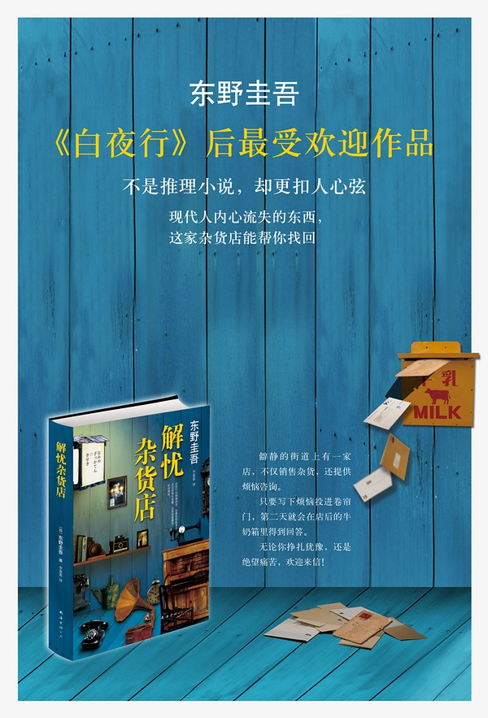

作 者：东野圭吾
原作名：ナミヤ雑货店の奇蹟
书籍ISBN：9573330121
书 名：解忧杂货店
页 数：352页
译 者：王蕴洁
定 价：NT$350
出版社：皇冠文化出版有限公司
装 帧：平装
出版年：2013年8月

简 介：
东野圭吾最令人感动落泪的作品！结局更出人意表！
荣获“中央公论文艺赏”、达文西杂志2012“Book of The Year”第3名！
日本热销突破30万册！亚马逊书店读者★★★★(四颗星)一致好评！已改编成舞台剧！
这里不只卖日常生活用品，
还提供消烦解忧的谘询。
困惑不安的你，纠结不已的你，
欢迎来信讨论心中的问题。
静僻的街道旁，伫立着一家“解忧杂货店”。只要在晚上把写了烦恼的信丢进铁卷门上的投递口，隔天就可以在店后面的牛奶箱里拿到回信解答。
男友罹患不治之症，陷入爱情与梦想两难的女孩；一心想成为音乐人，不惜离家又休学，却面临理想与现实挣扎的鱼店老板儿子；爸爸的公司倒闭，打算带着全家卷款潜逃，在亲情与未来之间游移不定的少年……
当他们纷纷写信到杂货店，不可思议的事情也接二连三发生。而那些一瞬间的交会，又将如何演变成一生一世的救赎？跨越三十年时空，杂货店恒常散放着温暖奇异的光芒……
作者简介：
东野圭吾Keigo Higashino
1958年生于日本大坂市，大坂府立大学工学部电气工学科毕业。曾在汽车零件供应商担任工程师，1985年以处女作《放学后》获得第31届“江户川乱步赏”后，随即辞职，专心写作。1999年以《秘密》一书获得第52届“日本推理作家协会赏”，2006年又以《嫌疑犯X的献身》荣获第134届“直木赏”，更凭此作入围2012年度，由美国推理作家协会主办的“爱伦．坡奖”年度最佳小说奖，不仅成为史上第一位囊括日本文坛三大奖项的推理作家，更是第二位入围“爱伦．坡奖”年度最佳小说的日本作家。
早期作品以校园青春推理为主，擅写缜密精巧的谜团，获得“写实派本格”的美名。后期则逐渐突破典型本格，而能深入探讨人心与社会议题，兼具娱乐、思考与文学价值。其惊人的创作质量与多元化的风格，使得东野圭吾成为日本推理小说界的超人气天王。作品包括《彷徨之刃》、《十一字杀人》、《回廊亭杀人事件》、《美丽的凶器》、《布鲁特斯的心脏》、《天使之耳》、《异变13秒》、《白马山庄杀人事件》、《黎明破晓的街道》、《侦探俱乐部》、《鸟人计画》、《魔球》、《浪花少年侦探团》、《再见了，忍老师──浪花少年侦探团2》、《天空之蜂》、《假面山庄杀人事件》，以及《学生街杀人》、《操控彩虹的少年》等书（暂译，皇冠将陆续出版），其中多部作品并已被改编成电视剧、电影或漫画。
译者简介：
王蕴洁
在翻译领域打滚十几年，曾经译介山崎丰子、小川洋子、白石一文等多位文坛重量级作家的著作，用心对待经手的每一部作品，翻译的文学作品数量已超越体重。
目 录
导 读
这就是东野圭吾的本事
东野圭吾小说普及性之所以这么高，几乎等于畅销书保证，一个不能不提的因素，即他的作品并非只有谜团，只是卖弄诡计；一个更重要的元素，即他过人的说故事能力，以及很有温度的文字书写；身为作家，强项一堆，难怪东野的创作总是多元又量产。
《解忧杂货店》是东野圭吾二○一二年的温馨长篇，这间会帮人解忧的“浪矢杂货店”，规则是只要在晚上把写了烦恼的信丢进铁卷门上的邮件投递口，隔天就可以在店后方的牛奶箱里拿到回信。嗯，这个题材初看之时是会联想到辻村深月那部有通灵者帮人完成心愿的《使者》，满有异曲同工的味道，基本上，是属于“穿越剧”这一款，东野老师写这类故事算驾轻就熟了，如果读者曾被他之前的《时生》、《秘密》感动疗愈到，那本书就铁定是你的菜。
前述特别提到东野圭吾是说故事高手，在本作更是展露无遗。“解忧”杂货店不是神庙，不是拜拜求签用的，服务项目比较像是人生咨询、心理辅导，比如这样的一个问题：“为参加奥运目标奋斗的女孩，因为男友罹癌将不久人世，所以陷入彷徨困惑。男友一直是她努力的支柱，因此当下是要弃男友于不顾，忍痛追求两人的梦想？还是陪男友走完人生最后一段路，但却会让他带着遗憾而死？”
“浪矢杂货店”该怎么回复少女的烦恼？如果是人生哲理一路谈下去，会像张老师、像生命线，但这可是小说喔，读者要的是故事性，有高潮起伏的趣味，有峰回路转的戏剧张力，显然东野圭吾有他的好几套，即便励志成份有一些，但成为小说的架构布局及起承转合，面面俱到很完整，更何况本书还是长篇咧！
好看的故事就是要有梗，梗要铺得恰到好处。本作的几个梗：以一九八○年为关键转折，回到过去、跨越时空三十年、对孤儿院的羁绊、带怀旧、有救赎、有报恩、是宿命与曙光共存的希望……素材在此，再来就看拼盘如何吸引人了。
以上段少女为了拚不拚奥运而烦恼为例。因为有着“回到过去、跨越时空三十年”的伏笔，所以解惑者自是可以有如先知般的预言，给少女的回信里多了更笃定的语气“世界各地都在发生战争，也有很多国家根本没办法参加奥运，日本也不能置身事外。你很快就会了解这一点。”为何？因为苏联入侵阿富汗，一九八○年的莫斯科奥运，日本加入美国的抵制行列。同样这个“先知”梗，到了另一个关于“迷茫的汪汪”故事中更猛，“浪矢杂货店”不但建议汪汪去学理财知识，还会提示炒房玩股票切记在一九九○年来到之前务必获利了结，如何？是不是真的很神！
另，穿越剧＋怀旧风的混搭，难免也是卖点。“听着披头四默祷”这个故事用了相当比例的篇幅缅怀起 THE BEATLES。从《A hard day's night》、《Mr. Moonlight》到《Don't let me down》、《I've got a feeling》；从披头四来日本公演、惊传解散到约翰伦农的遇刺身亡；对于纪录片形式电影《Let it be》的不同时空解读，对于《Sgt. Pepper's Lonely Hearts Club Band》专辑的心境与感伤；明明是在描述一段少年的苦涩与残酷物语，不过就因为有了披头四的音符和默祷，更加让人动容，不胜唏嘘。
本书看似几段故事、几个短篇的组合，但不管在人物之间还是境遇的串连，环环相扣，前后呼应。内心纠结的理由，被迫成长的勇气，到头来，原来，你的赞叹，你的感动，这就是东野圭吾的本事。对了，东野圭吾不是推理作家吗？那本书呢？没什么好疑问的，《解忧杂货店》依旧可列推理类，或许可以这样形容：一本毋须谋杀，不用警探，甚至连恶人都没有的推理小说。
──【部落客】小叶日本台
第一章
回信放在牛奶箱
１
翔太建议不如去废弃屋。他说，刚好有一栋适当的废弃屋。
“适当的废弃屋是怎么回事？”敦也低头看着个子不高，脸上还残留着少年稚气的翔太。
“适当就是适当啊，就是适合藏身的意思，是我之前勘察时偶然发现的，没想到现在真的可以派上用场。”
“对不起，两位，”幸平缩着高大的身体，依依不舍地注视着停在旁边的老旧皇冠车，“我做梦都没有想到，蓄电池会在这种地方报废。”
敦也叹着气。
“事到如今，说这些话也没用。”
“但到底是怎么回事？来这里的路上完全没有任何问题，我们并没有一直开车灯……”
“寿命到了吧，”翔太说得很干脆，“你看一下车子的里程数，已经超过十万公里了，原本就差不多快寿终正寝了，开到这里就彻底完蛋了。所以我才说，既然要偷车，就要偷新车。”
幸平抱着双臂，发出“嗯”的一声，“因为新车都装了防盗器。”
“算了，”敦也挥了挥手，“翔太，你说的废弃屋在这附近吗？”
翔太偏着头思考着，“走快一点的话，大约二十分钟吧。”
“好，那我们去看看。你带路。”
“带路当然没问题，但这辆车子怎么办？丢在这里没问题吗？”
敦也环顾四周。他们正站在住宅区内的月租停车场，因为刚好有空位，他们把皇冠车停在那里，一旦租这个车位的车主发现，一定会马上报警。
“当然不可能没问题，但车子动不了，也没办法啊。你们没有不戴手套乱摸吧？既然这样，我们就不可能因为这辆车被查到。”
“只能听天由命了。”
“所以我说了啊，目前只能这么办。”
“我只是确认一下，OK，那你们跟我走。”
翔太迈开轻快的脚步，敦也跟了上去。他右手提的行李袋很重。
幸平走到他旁边。
“敦也，要不要去拦出租车？再走一小段路，就可以到大马路，那里应该可以拦到空车。”
敦也“哼”地冷笑一声说：
“现在这种时间，有三个形迹可疑的男人在这种地方拦出租车，一定会被司机记住长相。到时候公布画出我们长相特征的通缉画像，我们就死定了。”
“但是，司机会仔细看我们的长相吗？”
“万一遇到会仔细打量的司机怎么办？况且，万一那个司机只要瞥一眼，就可以记住长相怎么办？”
幸平沉默不语，走了一小段路后，小声地道歉：“对不起。”
“算了，闭嘴赶路吧。”
时间是凌晨两点多，三个人走在位于高地的住宅区，周围有很多外形设计很相似的房子，几乎没有一栋房子亮灯，但绝对不能大意。如果不小心大声说话被人听到，事后警方来查访时，可能会有邻居告诉警察“半夜听到有可疑的男人经过的动静”，敦也希望警方认为歹徒开车离开了案发现场，当然，前提必须是那辆皇冠车不会很快被人发现。
他们正走在和缓的坡道上，走了一会儿，坡度越来越陡，房子也越来越少。
“到底要走去哪里？”幸平喘着气问。
“就快到了。”翔太回答。
走了不久之后，翔太的确停下了脚步，旁边有一栋房子。
那是一家店铺兼住家，但房子并不大。住家的部份是木造的日本建筑，门面不到四公尺宽的店铺拉下了铁卷门。铁卷门上没有写任何字，只有一个信件的投递口，旁边有一栋看起来是仓库兼停车场的小屋。
“这里吗？”敦也问。
“呃，”翔太打量着房子，偏着头回答：“应该是这里。”
“应该是什么意思？难道不是这里吗？”
“不，我想就是这里，只是和我上次来的时候感觉不太一样，我记得之前看的时候感觉比较新。”
“你上次来的时候是白天，可能是这个缘故。”
“也许吧。”
敦也从行李袋里拿出手电筒，照了照铁卷门周围。门上方有一块广告牌，好不容易才能辨识“杂货”这两个字，前面还有店名，但看不清楚是什么字。
“杂货店？开在这种地方？会有人来吗？”敦也忍不住说道。
“正因为没有人来，所以才倒闭了吧？”翔太说得很有道理。
“原来如此，要从哪里进去？”
“从后门走，那里的锁坏了，跟我来。”
翔太走进杂货店和小屋之间的防火巷，敦也他们也跟在后方。防火巷大约一公尺宽。走进防火巷时抬头看了看天空，圆月悬在正上方。
屋后的确有后门，门旁有一个小木箱子。“这是什么？”幸平小声嘀咕道。
“你不知道吗？牛奶箱，送牛奶时就放在这里。”敦也回答。
“是喔。”幸平露出钦佩的表情注视着牛奶箱。
后门打开，三个人走了进去。屋内虽然有灰尘的味道，但不至于不舒服。一坪大的水泥地上放了一个生锈的洗衣机，恐怕已经坏了。
脱鞋处有一双积满灰尘的拖鞋，他们没脱鞋子，跨过那双拖鞋进了屋。
一进门就是厨房。地上铺着地板，流理台和瓦斯炉并排放在窗边，旁边是一个双门冰箱，房间中央放着桌椅。
幸平打开冰箱，扫兴地说：“什么都没有。”
“当然不可能有啊，”翔太嘟着嘴说，“万一有的话，你打算吃吗？”
“我只是说说而已。”
隔壁是和室，放了衣柜和神桌，角落堆着坐垫。和室内还有壁橱，但他们无意打开检查。
和室后方就是店面。敦也用手电筒照了照，货架上还留着少许商品，都是一些文具、厨房用品和清洁用品。
“太幸运了，”正在检查神桌抽屉的翔太叫了起来，“有蜡烛，这么一来就有亮光了。”
他用打火机为几根蜡烛点了火，放在好几个地方，室内一下子亮了起来，敦也关掉了手电筒。
“太好了，”幸平盘腿坐在榻榻米上，“接下来只要等天亮就好。”
敦也拿出手机确认时间。凌晨两点刚过。
“啊，我找到这个。”翔太从神桌最下方的抽屉中，拿了一本像是杂志的东西，似乎是过期的周刊杂志。
“给我看看。”敦也伸出手。
他拍了拍灰尘，再度看着封面。封面上有一个面带笑容的年轻女人。是艺人吗？好像有点眼熟，他看了半天，终于想起是经常在连续剧中演妈妈的女演员，现在差不多六十多岁。
他把周刊杂志翻到背面，确认了发行日期，上面印了大约四十年前的日期。他告诉其它两个人时，他们都瞪大了眼睛。
“太猛了，不知道那时候发生了什么事。”翔太问。
敦也打开杂志，版面设计和目前的周刊杂志没有太大的差别。
“民众涌入超市抢购卫生纸和洗碗精，造成一片混乱……我好像有听说过。”
“我知道，”幸平说，“就是那个石油危机啦。”
敦也迅速浏览了目录，最后看了彩页，阖上了杂志。没有偶像照片和裸照。
“这里的住户不知道什么时候搬走的，”敦也把周刊杂志放回神桌的抽屉，环顾室内，“店里还留下一点商品，冰箱和洗衣机也没有搬走，感觉好像是匆忙搬家。”
“应该是跑路【西风瘦狼注：指因做了坏事而被警察通缉、或是因某些原因（如欠钱、负债等）而被黑道份子追杀（或被地下钱庄追讨金钱）、或起了贪念想把（非法）集资据为己有，而不得不逃走，先闪避一阵子，类似这种情况下的“逃跑”就叫做“跑路”。此说法来自闽南、台湾地区。】 ，八成错不了。”翔太断言，“因为没有客人上门，所以债台高筑，最后在某天晚上收拾行李连夜遁逃。我猜就是这样。”
“可能吧。”
“肚子好饿喔，”幸平没出息地说，“这附近不知道有没有便利商店。”
“即使有，也不会让你去，”敦也瞪着幸平，“在天亮之前，都要留在这里。只要睡着的话，很快就天亮了。”
幸平缩起脖子，抱着膝盖，“我肚子饿的时候睡不着。”
“这里的榻榻米上都是灰尘，根本没办法躺下来，”翔太说，“至少该拿什么东西垫一下。”
“等一下。”敦也说完，站了起来。他拿着手电筒，走去前方的店面。
他照着货架，在店里走来走去，希望能够找到塑料布之类的东西。
有卷成筒状的纸，那是用来糊纸门的纸。只要把纸摊开，可以躺在上面。他正想伸手拿纸卷，背后传来隐约的动静。
敦也吓了一跳，回头一看，发现有什么白色的东西掉在铁卷门前的纸箱内。他用手电筒照了纸箱内，发现是一封信。
他全身的血液沸腾起来，有人把信从邮件投递口投进来。三更半夜，邮差不可能来这种废弃屋送信。也就是说，一定是有人发现敦也他们在这栋房子里，所以来向他们通风报信。
敦也深呼吸后，打开邮件投递口的盖子，观察外面的情况。他以为外面可能停满了警车，没想到一片漆黑，完全没有任何动静。
他稍稍松了一口气，捡起那封信。信封上没有写任何字，他翻过来一看，发现用圆润的笔迹写着“月亮兔”几个字。
他拿着信走回和室，给另外两个人看，他们都露出害怕的表情。
“这是怎么回事？会不会之前就留在那里的？”翔太问。
“我亲眼看到刚才丢进来的，绝对不会错，而且，你看这个信封，不是还很新吗？如果之前就有了，上面应该有很多灰尘。”
幸平把高大的身体缩成一团，“会不会是警察……？”
“我原本也以为是警察，但应该不是，如果是警察，不会做这种蠢事。”
“对啊，”翔太嘀咕，“警察怎么会自称是‘月亮兔’。”
“那是谁啊？”幸平不安地转动着眼珠子。
敦也注视着信封，拿在手上时，感觉份量很重。如果是信，应该是一封长信。送信的人到底想告诉他们什么？
“不，不对，”他嘀咕道，“这不是给我们的信。”
另外两个人同时看着敦也，似乎在问：“为什么？”
“你们想一想，我们走进这个家才多久？如果只是在便条纸上写几行字也就罢了，要写这么长一封信，至少也要三十多分钟。”
“对喔，被你这么一说，好像也有道理，”翔太点点头，“但里面未必是信啊。”
“那倒是，”敦也再度低头看着信封，信封黏得很牢，他下定决心，用双手抓住信封的角落。
“你要干嘛？”翔太问。
“打开看看，就知道里面是什么了。”
“但上面没有写是寄给我们的，”幸平说，“擅自拆别人的信不太好吧？”
“有什么办法，因为上面并没有写收信人的名字。”
敦也撕开信封，用戴着手套的手指伸进信封，把信纸抽了出来。打开一看，上面用蓝色墨水写了满满的字。第一行写着：“这是我第一次谘商。”
“什么意思啊？”敦也忍不住嘀咕道。
幸平和翔太在一旁探头张望。
那的确是一封很奇妙的信。
这是我第一次谘商。我叫月亮兔，是女生，请原谅我因故无法公开真实姓名。
我是运动选手。不好意思，我也不方便公布我从事的运动项目。虽然我这么说有点像在自夸，但我的表现很不错，有机会代表国家参加明年举行的奥运。所以，一旦我公开运动项目，很容易猜到我是谁，但我想谘商的事和我是奥运候选选手这件事也有关系，所以，敬请谅解我的任性。
我很爱我的男朋友，他最了解我，也最支持我，对我的帮助也最大，他发自内心地希望我去参加奥运，他说，只要我能参加奥运，他愿意付出任何牺牲。事实上，他无论在物质上还是精神上，都给了我不计其数的支持。正因为他的无私奉献，我才能够努力到今天，才能够撑过这些痛苦的训练。我一直觉得自己站在奥运的舞台上是对他最大的报答。
但是，最近发生了一件对我们来说简直就像是恶梦般的事。他突然病倒了，得知病名后，我觉得眼前一片漆黑。因为他罹患了癌症。
他几乎没有治愈的可能，医院的医生私下告诉我，他只剩下半年的生命，但我猜想他自己也已经察觉了。
他躺在病床上对我说，目前对我来说是很重要的时期，叫我不必在意他，专心投入训练。事实上，最近的确有很多加强集训和远征海外比赛的行程，我很清楚，如果想代表国家参加奥运，眼下真的是关键时期。
但是，除了身为运动员的我以外，还有另一个我希望可以陪伴在他身旁。我想放弃训练，陪在他身旁照顾他。事实上，我也曾经提议放弃参加奥运，但是，他当时露出悲伤的表情，至今回想起来，都忍不住落泪。他对我说，千万不要有这种念头，我去参加奥运，是他最大的梦想，不要夺走他的梦想。无论发生任何事，在我站在奥运的舞台上之前，他都不会死，要我向他保证，一定会努力训练。
他向周围人隐瞒了病情。我们打算在奥运结束后结婚，但并没有告诉家人。
我度日如年，不知道该怎么办才好。即使在练习时，也无法专心投入，成绩当然不可能理想。我忍不住想，既然这样，不如干脆放弃比赛，但是，想到他难过的表情，我迟迟无法下决心。
在我独自烦恼时，刚好听到了浪矢杂货店的传闻，心想搞不好可以向我提供什么妙计。我抱着一线希望，写了这封信。
同信附上了回邮的信封，请助我一臂之力。
月亮兔
２
三个人看完信，忍不住面面相觑。
“怎么回事？”最先开口的是翔太，“为什么会丢这封信进来？”
“因为她在烦恼啊，”幸平说，“信上不是写了吗？”
“这我当然知道，问题是为什么找杂货店谘商她的烦恼？而且是已经倒闭、根本没人住的杂货店。”
“你问我，我也不知道啊。”
“我不是问你，只是把内心的疑问说出来，问这到底是怎么回事。”
敦也听着另外两个人的对话，看着信封内。信封内放了另一个折起来的信封，收件人的地方用签字笔写了“月亮兔”几个字。
“这是怎么回事啊？”他终于开口问道，“看起来不像是精心设计的恶作剧，似乎是真心在请求指教，而且她也的确很烦恼。”
“是不是搞错了，”翔太说，“搞不好哪里有帮人开示的杂货店，她一定是搞错地方了。”
敦也拿起手电筒站了起来，“我去确认一下。”
他从后门走出去，绕到杂货店前，用手电筒照向广告牌。
他定睛细看，油漆剥落，看不清楚，但在“杂货店”前面，的确有片假名写着“浪矢”这几个字。
他回到屋内，把看到的情况告诉另外两个人。
“所以果然是这家店，但正常人把信丢进这种废弃屋，会期待有人回答吗？”翔太偏着头纳闷。
“搞不好不是这家浪矢？”幸平开口说，“搞不好哪里有一家真正的浪矢杂货店，因为两家店名相同，所以搞错了。”
“不，不可能。广告牌上的文字几乎快看不到了，如果不是事先知道叫这个名字，根本看不清楚。不过……”敦也拿出刚才那本周刊杂志，“我好像在哪里看过。”
“看过？”翔太问。
“我好像看过‘浪矢’这两个字，我记得好像是在这本周刊上看到的。”
敦也翻开周刊杂志的目录，快速地浏览，视线立刻停留在一个地方。
那是一篇名为“深受好评！消烦解忧的杂货店。”
“就是这篇，只不过不是浪矢（namiya），而是烦恼（nayami）……”
他翻到那一页，报导的内容如下。
有一家可以解决任何烦恼的杂货店深受好评。那家店就是位在○○市的浪矢杂货店。只要在晚上把写了烦恼的信丢进铁卷门上的邮件投递口，隔天就可以在店后方的牛奶箱里拿到回信。杂货店老板浪矢雄治先生（七十二岁）笑着说：
“一开始是我和附近的小孩子拌嘴，因为他们故意把浪矢（namiya）念成烦恼（nayami）。因为广告牌上写着，接受顾客订货，意者请内洽，他们就说，爷爷，既然这样，那我们可以找你解决烦恼吗？我回答说，好啊，任何烦恼都没有问题，没想到他们真的来找我商量。因为原本只是开玩笑，所以起初来找我商量的都是一些乱七八糟的事。像是不想读书，要怎么让成绩单上都是五分，但我无论遇到什么问题，都很认真地回答，久而久之，开始有一些严肃的内容。像是爸爸、妈妈整天吵架，他觉得很痛苦。后来，我请他们把要问的事写在信上，丢进铁卷门上的邮件投递口，我会把回信放在后门的牛奶箱里。这么一来，即使对方不具名，我也可以回答。从某一段时间之后，大人也开始找我谘商。虽然我觉得我这种平凡的老头子帮不上什么大忙，但还是很努力思考，努力回答他们的问题。”
当问及哪方面的烦恼最多时，浪矢先生回答说，大多数都是恋爱的烦恼。
“不瞒你说，这是我最不擅长回答的问题。”浪矢先生说，这似乎成为了他的烦恼。
报导旁有一张小照片，照片上出现的正是这家店，一个矮小的老人站在店门前。
“这本周刊杂志并不是刚好留下来，因为这本周刊上登了自己家里的事，所以特地留下来。话说回来，真让人惊讶──”敦也轻声嘀咕道，“消烦解忧的浪矢杂货店吗？相隔了四十年，现在还有人上门谘商吗？”
说完，他看着“月亮兔”寄来的信。
翔太拿起信纸。
“上面写着，她是听到传闻，听到关于浪矢杂货店的传闻。从信上写的内容来看，似乎是最近才听到的，所以，这代表这个传闻还在流传吗？”
敦也抱着双臂，“也许吧，虽然很难想象。”
“可能是从已经痴呆的老人口中听到的，”幸平说，“那个老人不知道浪矢杂货店现在已经变成这样，把传闻告诉了兔子小姐。”
“即使真的是这样，兔子小姐看到这栋房子，应该会觉得奇怪。因为这里明显没有住人。”
“那就是兔子小姐脑筋有问题，她太烦恼，脑筋变得不正常了。”
敦也摇着头，“这不像是脑筋有问题的人写的文章。”
“那是怎么一回事？”
“所以我在想啊。”
“该不会……”翔太突然叫了起来，“还在持续？”
敦也看着翔太问：“持续什么？”
“就是烦恼谘商啊，就在这里。”
“这里？什么意思？”
“虽然现在这里没有住人，但可能持续进行消烦解忧的谘商。那个老头目前住在别的地方，不时回来收信，然后，把回信放在后门的牛奶箱里。这么一来，就合情合理了。”
“虽然合情合理，但这代表那个老头还活着，那他就超过一百一十岁了。”
“是不是有人代替他？”
“但这里完全不像有人出入的样子。”
“因为没有进屋啊，只要打开铁卷门就可以拿信了。”
翔太的话不无道理。三个人决定去店面确认，结果发现铁卷门从内侧焊住了，无法打开。
“他妈的，”翔太气鼓鼓地说，“到底是怎么回事啊？”
三个人回到和室，敦也再度看着“月亮兔子”写来的信。
“怎么办？”翔太问敦也。
“不必放在心上，反正天亮之后，我们就离开了。”敦也把信放回信封，放在榻榻米上。
一阵沉默。外面传来风声，蜡烛的火光微微晃了一下。
“她不知道有什么打算。”幸平幽幽地说。
“打算什么？”敦也问。
“就是那个啊，”幸平说，“奥运啊，不知道她会不会放弃。”
“不知道。”敦也摇了摇头。
“应该不可能吧，”回答的是翔太，“因为她男朋友希望她去参加奥运。”
“但是，她男朋友生病快死了，这种时候哪有心思训练，当然应该陪在男朋友身边啊。她男朋友心里应该也是这么想吧。”幸平难得用强烈的语气反驳道。
“我不觉得，她男朋友想要看到她在奥运舞台上发光，所以正在和疾病搏斗，至少希望可以活到那一天，但如果她放弃了奥运，她男朋友可能就失去了活下去的力量。”
“但她在信上写了，无论做什么事都无法专心投入，这样下去，根本没办法去参加奥运比赛。她既见不到男朋友，又无法完成心愿，不是赔了夫人又折兵吗？”
“所以她必须拚命努力啊，现在根本没时间烦恼。即使为了她男朋友，也要努力练习，无论如何，都要争取参加奥运，这是她唯一的选择。”
“是喔，”幸平皱起眉头，“是吗？我做不到。”
“又不是叫你去做，是叫这位兔子小姐去做。”
“不，我不会要求别人去做我自己也做不到的事，翔太，你自己呢？你做得到吗？”
被幸平这么一问，翔太答不上来，一脸不悦地转头看着敦也问：“敦也，那你呢？”
敦也轮流看着他们两个人。
“你们干嘛这么认真讨论？我们有必要考虑这种事吗？”
“那这封信要怎么办？”幸平问。
“怎么办……没怎么办啊。”
“但是，要写回信啊，不能丢着不管吧。”
“什么？”敦也看着幸平的圆脸，“你打算写回信吗？”
幸平点点头。
“写回信比较好吧？因为我们擅自把信拆开了。”
“你在说什么啊，这里本来就没有人，她不应该把信丢来这里，收不到回信是理所当然的。翔太，你也同意吧？”
翔太摸着下巴，“你这么说也有道理。”
“对吧？不用管他啦，不要多管闲事。”
敦也走去店面，拿了几捆糊纸门的纸回来，交给另外两个人。
“给你们，用这个铺着，睡在上面。”
翔太说了声：“谢啦。”幸平说了：“谢谢。”接了过来。
敦也把纸铺在榻榻米上，小心翼翼地躺了下来。他闭上眼睛准备睡一下，发现另外两个人没有动静，张开眼睛，把头抬了起来。
两个人抱着纸，盘腿坐在榻榻米上。
“不能带他去吗？”幸平嘟囔着。
“带谁？”翔太问。
“她男朋友啊，生病的那个。如果她去集训或远征时可以带男朋友同行，就可以一直在一起，她也可以训练和参加比赛。”
“不，这不行吧？他生病了啊，而且只剩下半年。”
“但不见得不能动弹啊，搞不好可以坐轮椅，这样的话，就可以带他同行了。”
“如果能够做到的话，她就不会来谘商了。她男朋友应该卧床不起，不能动弹吧。”
“是吗？”
“对啊，我想应该是这样。”
“喂，”敦也开了口，“你们要讨论这种无聊事到什么时候？我不是说了，别管闲事吗？”
另外两个人窘迫地住了嘴，垂头丧气，但翔太立刻抬起头。
“敦也，我能理解你说的话，但不能丢着不管。因为兔子小姐很烦恼啊，要设法帮助她才行啊。”
敦也冷笑了一声坐了起来。
“设法帮助她？笑死人了，我们这种不入流的人能帮她什么？既没钱，又没学历，也没有人脉，我们只配干这种被人唾弃的闯空门勾当，就连闯空门也无法按计划进行。好不容易偷了值钱的东西，逃跑用的车子却故障了，所以才会跑来这种积满灰尘的房子。我们连自己都顾不好，哪有什么能力去为别人解忧？”
敦也一口气说完，翔太缩着脖子，低下了头。
“总之，赶快睡吧，天亮之后，就会有很多人出门上班，我们可以趁乱逃走。”
敦也说完，再度躺了下来。
翔太终于开始把纸门的纸铺在地上，但他的动作很缓慢。
“我说啊，”幸平语带迟疑地开了口，“要不要写点什么？”
“写什么？”翔太问。
“回信啊，不写回信，总觉得有点过意不去……”
“你是白痴喔，”敦也说，“在意这种事有屁用啊。”
“但是，即使只是写几句话，应该总比不写好得多。有时候不是会觉得有人愿意听自己说话，就很感恩吗？心里有烦恼的时候，如果无法向别人倾诉，就会很痛苦。即使无法给她什么实用的建议，只要说能够理解她的烦恼，请她加油，我相信她的心情就会轻松不少。”
“呿，”敦也不以为然地说：“随便你啦，真是蠢到家了。”
幸平站了起来，“有没有笔？”
“那里好像有文具。”
翔太和幸平走去店里，不一会儿，窸窸窣窣地走了回来。
“找到笔了吗？”敦也问。
“嗯，签字笔都写不出来，但原子笔没问题，而且还有信纸。”幸平一脸开心地回答，走去隔壁厨房，把信纸放在桌上，坐在椅子上。“写什么呢？”
“你刚才不是说了吗？我了解你的烦恼，请你加油，这样写就好了啊。”敦也说。
“光写这样好像太冷淡了。”
敦也咂了一下嘴，“懒得理你了。”
“刚才说的那个把她男友一起带去的建议怎么样？”翔太问。
“你刚才不是说，如果她可以这么做，就不会来找人商量了吗？”
“虽然我刚才这么说，但你可以向她确认一下啊。”
幸平露出犹豫的表情看着敦也问：“你觉得呢？”
“不要问我。”敦也把头转到一旁。
幸平拿着原子笔，但在开始写之前，又看向敦也。
“信的开头是怎么写？”
“对啊，好像有固定的格式，拜启和前略什么的，”翔太说，“但应该不需要写这些吧，这封信上也没有写，就当作写电子邮件就好了。”
“喔，对喔，当作电子邮件就好。那我就写，看了你的电子邮件，不对，是看了你的来信。看、了、你、的、来、信……”
“不必念出来啦。”翔太提醒他。
幸平写字的声音也传入敦也的耳朵。他写字似乎很用力。
不一会儿，幸平说了声“写完了”，拿着信纸走了过来。
翔太接过来后说：“你的字真丑。”
敦也从旁边探头张望。幸平的字真的很丑，而且，都是平假名。
看了你的来信，你辛苦了。我很理解你的烦恼，目前想到一个方法，你出门集训和比赛时，是不是可以带你男朋友同行呢？对不起，只能想到这种普通的方法。
“怎么样？”幸平问。
“不错啊，对吧？”翔太回答后，又征求敦也的同意。
“无所谓啦。”敦也回答。
幸平小心翼翼地把信纸折好，放进信封内写着“月亮兔”的信封里，“我去放进牛奶箱。”说完，他从后门走了出去。
敦也叹了一口气。
“真搞不懂他在想什么，现在哪有时间去理会陌生人的烦恼。连你也和他一起瞎起哄，真搞不懂你们在干什么。”
“别这么说嘛，偶尔也不错啊。”
“什么偶尔也不错。”
“因为别人通常不会来向我们倾诉烦恼，也不会来找我们这种人商量，恐怕一辈子都不会有这种机会。这是第一次，也可能是最后一次，所以，有一次这样的经验也不错。”
“哼，”敦也又冷笑了一声，“这就叫做不自量力。”
幸平回来了。
“牛奶箱的盖子好紧，差一点打不开，可能很久没有用了。”
“那当然啊，现在哪有人送──”敦也还没有把“牛奶”两个字说出口，就住了口，“喂，幸平，你的手套呢？”
“手套？在这里啊。”他指着桌上。
“你什么时候脱掉的？”
“写信的时候。因为戴了手套不好写字……”
“笨蛋，”敦也站了起来，“信纸上搞不好会留下指纹。”
“指纹？有什么关系吗？”
幸平一脸呆相，敦也很想对着他的圆脸狠狠甩两巴掌。
“警察早晚会知道我们躲在这里，如果那个叫‘月亮兔’的女人没有去牛奶箱拿回信怎么办？警方只要一查指纹就完蛋了。你应该曾经在开车违规时留过指纹吧？”
“啊……真的有。”
“呿，所以我叫你别多管闲事嘛。”敦也一把抓起手电筒，大步穿越厨房，从后门走了出去。
牛奶箱的盖子盖得很紧，的确像幸平说的，卡得很紧。敦也用力打开了。
他用手电筒照着牛奶箱，但里面是空的。
他打开后门，对着里面问：“喂，幸平，你放在哪里？”
幸平一边戴着手套，一边走出来。
“什么哪里，就是那里的牛奶箱啊。”
“里面没有啊。”
“啊？怎么可能……？”
“是不是你以为放进去了，其实掉了？”敦也用手电筒照着地上。
“绝对不可能，我确确实实放进去了。”
“那信去了哪里？”
幸平偏着头纳闷时，传来一阵慌乱的脚步声，翔太冲了出来。
“怎么了？发生什么事了？”敦也问。
“我听到店铺那里有动静，去看了一下，发现这个掉在邮件投递口下方。”翔太脸色铁青地递上一封信。
敦也倒吸了一口气。他关掉手电筒，蹑手蹑脚地走过房子旁的防火巷，躲在房子后方，偷偷看着店门前。
但是──
那里没有人影，也不像有人刚离开。
３
浪矢先生，谢谢您这么快速回答。昨天晚上，把信投进府上的信箱后，今天一整天都在想，提出这么伤脑筋的问题，是不是给您添麻烦了。接到回信后，终于松了一口气。
浪矢先生，您的疑问很正常。如果可能，我也想带他一起去远征和集训，但他目前的病情无法这么做，必须在医院好好接受治疗，以免病情急速恶化。
也许你觉得我可以在他附近训练，但他住的那家医院附近没有我可以训练的场所和设备，只有训练休息的日子，我才能长途跋涉去见他。
其次，我很快就要出发去下一次集训了，今天我去见了他。他说，希望我可以有好成绩。我对他点头说好。我很想对他说，我不想去，我想陪在他身边，但还是拚命忍住了。因为我知道我这么说，他一定会很难过。
我很希望即使我们分开，也可以看到对方，我常梦想如果有像漫画中那种视讯电话就好了，这是在逃避现实吧。
浪矢先生，谢谢您愿意分担我的烦恼。能够写信向您说出这些，心里就轻松多了。
我知道必须自己找出解决的方法，但如果您想到什么，请您写信告诉我。如果您觉得无法给我任何建议，也请您告诉我，我绝对不会给您添麻烦的。
总之，我明天也会去看牛奶箱。
拜托您了。
月亮兔
翔太最后一个看完信，他抬起头，眨了两次眼睛，“这到底是怎么回事？”
“不知道，”敦也说，“这封信是怎么回事？”
“应该是回信吧，兔小姐的回信。”
听到幸平的回答，敦也和翔太同时看着他的脸。
“为什么会收到她的回信？”两个人异口问声地问。
“为什么……？”幸平抓着头。
敦也指着后门。
“你五分钟前才把信放进牛奶箱。我马上去看，信已经消失了，即使那个叫兔子的女人拿走了那封信，写这些回信也需要时间，但是，第二封回信又马上丢了进来，这也未免太诡异了吧？”
“我也知道很奇怪，但应该是兔子小姐写的回信吧？因为她回答了我问她的问题。”
听到幸平的回答，敦也无法反驳。他说的完全正确。
“借我看一下。”说着，他从翔太手上把信抢了过来，又重新看了一遍。如果没看过幸平的回信，的确无法写出这些内容。
“妈的，到底是怎么回事？有人在整我们吗？”翔太烦躁地说。
“没错，”敦也指着翔太的胸口说，“一定有人在搞鬼。”
敦也把信丢在一旁，打开旁边的壁橱，但里面只有被褥和纸箱。
“敦也，你在干什么？”翔太问。
“我在看有没有人躲在里面。一定有人在幸平写信之前，听到我们的谈话，先去写了回信。不，搞不好有窃听器，你们也在那里找找看。”
“等一下，谁会做这种事？”
“我怎么知道？搞不好哪里有这种变态，喜欢恶整偷偷溜进这栋废弃屋的人。”敦也用手电筒照着神桌内。
但是，翔太和幸平都没有动弹。
“怎么了？你们为什么不找？”
敦也问。翔太偏着头思考。
“不，我觉得应该不是这么一回事，我不觉得有人会做这种事。”
“但事实就是有人这么做啊，不然还能怎么解释？”
“是吗？”翔太一副无法苟同的表情，“那牛奶箱里的信不见了要怎么解释？”
“这是……一定有什么机关，就像变魔术一样，一定有什么机关。”
“机关喔……”
幸平第二次看完信后抬起头，“这个人有点奇怪喔。”
“哪里奇怪？”敦也问。
“因为她在信上写，很希望有视讯电话。她没有手机吗？还是她的手机没有视讯功能？”
“医院里不能用手机吧？”翔太回答。
“但她还说，就像漫画中的视讯电话，可见她不知道有些手机有视讯功能。”
“怎么可能？现在哪有人不知道的。”
“不，我猜想是这样。好，那我来告诉她。”幸平走向厨房的桌子。
“喂，怎样？又要写回信吗？根本是有人在整我们啊。”敦也说。
“但现在还不知道。”
“绝对是在整我们。现在也在偷听我们的谈话，马上去写信了──不，等一下。”敦也突然灵机一动，“好，幸平，你写回信。我想到了一个好主意。”
“为什么突然改变？怎么了？”翔太问。
“别问那么多，马上就知道了。”
不一会儿，幸平说“写好了”，放下了原子笔。敦也站在他的身旁，低头看着信纸。幸平的字还是一样丑。
看了你的第二封信，告诉你一个好消息，手机有视讯功能，任何厂牌的手机都有这种功能，只要在医院偷偷使用，就可以解决问题了。
“这样没问题吧？”幸平问。
“应该没问题，”敦也回答，“反正写什么都无所谓，写完赶快装进信封。”
第二封信中也放了收件人是“月亮兔”的信封。幸平把自己写的信折好后，放进了信封。
“我和你一起去，翔太，你留在这里。”敦也拿着手电筒走向后门。
来到屋外后，看着幸平把信放进了牛奶箱。
“好，幸平，你先躲起来，看着这个箱子。”
“好，那你呢？”
“我去前面，我要看看到底是谁来投信。”
他经过防火巷，躲在屋旁观察着。没有人影。
不一会儿，听到身后有动静。回头一看，翔太走了过来。
“怎么了？不是叫你等在房子里吗？”敦也问。
“有人来过吗？”
“现在还没有，所以我还等在这里啊。”
翔太微微张着嘴，露出不知所措的表情。
“怎么了？发生什么事了？”
敦也问，翔太把信递到他面前。“已经来了。”
“什么来了？”
“就是啊，”翔太舔了舔嘴唇，继续说：“第三封信来了。”
４
再度感谢您的回信，知道有人了解我的烦恼，我的心情也轻松了不少。
但是，浪矢先生，真的很抱歉，关于您这次的回答，我至今无法了解其中的意图，应该说，我完全看不懂您的回答。
我猜想应该是我太才疏学浅、孤陋寡闻了，所以才无法理解您想要激励我的玩笑话，我太羞愧了。
我母亲经常对我说：“即使遇到不懂的事，也不能立刻开口问别人，要自己先好好查数据”，所以，我平时都尽可能自己查数据，但是，这一次我真的完全搞不懂。
我不知道手机是什么。
因为您是用片假名写的，我猜想是外来语，但怎么查也查不到。如果是英文，我猜想应该是“catie”或是“katy”【注：日文中的手机发音是“ke─i─ta─i”。】，但是查不到，可能不是英语吧？
因为不了解“手机”的意思，所以，您的宝贵意见对我来说，真的就是“对牛弹琴”、“对马念经”，如果您愿意指点，将会帮我很大的忙。
真的很抱歉，让您在百忙之中为这种事费心。
月亮兔
三个人把“月亮兔”的三封信放在桌上，围着信坐在椅子上。
“我们来整理一下，”翔太开了口，“幸平这次放进牛奶箱的信也消失了，幸平虽然躲在暗处观察，但没有人走近牛奶箱。敦也也监视店门前，也没有人靠近铁卷门，第三封信却丢进来了。以上这些情况，有哪里和事实不符合的吗？”
“没有。”敦也简短地回答，幸平默默点头。
“所以，”翔太竖起食指，“没有人靠近这栋房子，但幸平的信不见了，又收到了兔子小姐的信。虽然我们仔细检查了牛奶箱和铁卷门，却没有发现任何机关。你们觉得这是怎么回事？”
敦也把身体靠在椅背上，双手抱在脑后。
“正因为不知道，所以才在烦恼啊。”
“幸平呢？”
幸平摇着圆脸，“不知道。”
“翔太，你知道什么吗？”
敦也问。翔太低头看着三封信。
“你们不觉得奇怪吗？她不知道什么是手机，以为是外来语。”
“她在乱说吧。”
“是吗？”
“对啊，现在哪有日本人不知道手机的。”
翔太指着第一封信。
“那这个呢？她在信上说，明年有奥运，但仔细想一下，明年的冬天和夏天都没有奥运，伦敦奥运才刚结束。”
“啊！”敦也忍不住叫了起来，然后，他慌忙皱着眉头，摸着人中掩饰自己的失态，“应该她搞错了吧。”
“是吗？她要去参加比赛，这种事会搞错吗？更何况她也不知道视讯电话，你们不觉得有问题吗？”
“是有问题……”
“还有，”翔太压低了嗓门说，“另一件事很奇怪。我刚才在外面时发现了这件事。”
“什么事？”
翔太露出犹豫的表情后开了口。
“敦也，你的手机现在几点？”
“手机？”敦也从口袋里拿出手机，确认了上面的时间，“凌晨三点四十分。”
“嗯，所以，我们来这里已经一个多小时了。”
“对啊，怎么了吗？”
“嗯，你们跟我来。”翔太站了起来。
他们再度从后门来到屋外。翔太站在和隔壁仓库之间的防火巷内，仰望着夜空。
“第一次经过这里时，我发现月亮在正上方。”
“我也发现了，那又怎么样？”
翔太目不转睛地看着敦也的脸。
“你不觉得奇怪吗？已经过了一个多小时，月亮的位置几乎没有改变。”
敦也不知道翔太说的话是什么意思，纳闷了一下，但随即理解了。他心脏激烈跳动，脸颊发烫，一股寒意贯穿背脊。
他拿出手机，手机上显示凌晨三点四十二分。
“这是怎么回事？为什么月亮不动了？”
“可能目前刚好是月亮不太动的季节。”
“哪有这种季节？”翔太当下否定了幸平的意见。
敦也轮流看着自己的手机和夜空的月亮，完全搞不懂发生了什么状况。
“对了。”翔太开始操作电话，似乎正在打电话。
他的脸紧张起来，不停眨着的眼睛露出慌乱。
“怎么了？你打电话给谁？”敦也问。
翔太不发一语地把手机递了过来，似乎叫敦也自己听。
敦也把电话放在耳边，听到一个女人的声音。
“目前的、时间是、凌晨、两点、三十六分。”
※※※ ※※※ ※※※
三个人回到屋内。
“手机并没有坏，”翔太说，“这栋房子有问题。”
“你的意思是，有什么会让手机时钟错乱的东西吗？”
听到敦也的问题，翔太没有点头。
“我想，手机的时钟并没有错乱，而是正常运作，但显示的时间和实际时间有落差。”
敦也眉头深锁，“为什么会这样？”
“我猜想可能这栋房子内外被时间隔绝了，所以，时间的速度不一样。即使在这里过了很久，在外面只有一眨眼的工夫。”
“啊？你在说什么啊？”
翔太再度看了一眼信后，才看着敦也。
“虽然没有人靠近这栋房子，但幸平的信消失，兔子小姐的信送来这里。照理说，不可能有这种事情发生。所以，会不会有人拿走了幸平的信，看了信之后，又把回信送来这里，只是我们看不到那个人。”
“看不到？那个人是透明人吗？”敦也问。
“啊，我知道了，是幽灵。啊？这里有幽灵吗？”幸平把身体缩成一团，向左右张望。
翔太缓缓摇头。
“既不是透明人，也不是幽灵，那个人不是这个世界的人。”他指着三封信继续说：“是以前的人。”
“以前？什么意思？”敦也尖声问道。
“我认为是这样的。铁卷门上的投递口，还有牛奶箱都和过去连结，过去的某个人把信投在那个时代的浪矢杂货店，现在这家店就会收到信。相反地，只要把回信放在牛奶箱里，就等于放进了过去的牛奶箱。虽然我不知道怎么做到的，也不知道为什么会发生这种事，但只有这样可以解释得通。”
原来兔子小姐是以前的人。翔太总结道。
敦也没有立刻说话，因为他不知道该说什么，大脑拒绝思考。
“怎么可能？”他终于挤出这句话，“怎么可能有这种事？”
“我也不相信啊，但只有这样才能解释，如果你觉得不可能，那你来说说，有什么解释可以说明眼前的情况。”
被翔太这么反问，敦也无言以对。当然，他无法合理解释目前的情况。
“还不是因为你写回信，把事情搞得这么复杂。”他没好气地责怪幸平。
“对不起……”
“没必要责怪幸平啊。如果真的像我解释的那样，那就太酷了，我们竟然可以和以前的人通信。”翔太的双眼发亮。
敦也陷入了混乱，不知道该如何是好。
“走吧，”说完，他站了起来，“赶快离开这里。”
另外两个人惊讶地抬头看着他，“为什么？”翔太问。
“不是很可怕吗？万一卷入麻烦就糟了。快离开吧，还有很多地方可以藏身。在这里等再久，实际的时间几乎没有走动，如果天一直不亮，躲在这里也没有意义。”
但是，另外两个人不同意，都露出不悦的表情沉默不语。
“怎么了？你们倒是说句话啊。”敦也大声说道。
翔太抬起头，他的眼神很认真。
“我想继续留在这里。”
“啊？为什么？”
翔太偏着头。
“我也搞不懂为什么，只知道自己正在体会很惊人的经验，这种机会千载难逢……不，恐怕这辈子都不会再遇到了，所以，我不想浪费这个机会。敦也，你先走没有关系，但我还要继续留在这里。”
“留在这里做什么？”
翔太看着排在桌上的信。
“先写回信，因为和过去的人交换书信太了不起了。”
“嗯，对啊，”幸平也点着头，“而且，也要帮这位兔子小姐解决烦恼。”
敦也看着他们，稍稍后退，用力摇着头。
“你们脑筋有问题，到底在想什么啊？和以前的人交换书信有什么好玩？别闹了，别闹了，万一被卷入麻烦怎么办？我不想和这种事有任何牵扯。”
“所以我说了啊，你想走就走啊。”翔太的表情很温和。
敦也用力吸了一口气，他想要反驳，却不知道该说什么。
“随你们的便，万一有什么事别找我。”
他走回和室，拿起行李袋，没有回头看另外两个人，就从后门走了出去。他仰望天空，圆月仍然在刚才的位置，几乎没有移动。
他拿出手机。他想起手机内有电波钟，自动校对了时间，液晶屏幕上立刻出现了时间，但和刚才听到报时的时间只相差不到一分钟。
※※※ ※※※ ※※※
敦也独自走在没什么路灯的昏暗街头。夜晚的空气很冷，但他的脸颊很烫，所以并不在意。
怎么可能有这种事？他忍不住想道。
邮件投递口和牛奶箱可以连结过去，那个叫“月亮兔”的女人从过去投信到现在？
太荒谬了。虽然这种说法可以解释所有的现象，但这种事不可能实际发生。一定有哪里搞错了，一定有人在恶搞。
即使翔太的假设成立，当然要避免和这种异常世界有任何牵扯。万一发生了什么状况，也没有人会帮忙，必须靠自己保护自己，之前一直都是这样。和别人有过多的牵扯都不会有什么好事，更何况对方是过去的人，对目前的自己毫无帮助。
走了一会儿，来到大马路上，不时有车辆经过。他沿着这条路往前走，看到前方有一家便利商店。
他想起刚才幸平很没出息地说“肚子饿了”时的声音。如果在那栋房子里不睡觉，恐怕会更饿吧。他们到底想干什么？还是说，因为时间几乎停摆，所以也不会觉得饿？
这种时间走进便利商店，很可能会被店员记住长相，还会被监视录像机拍到。不必理会那两个人，他们会自己想办法。
虽然敦也这么想，但还是停下了脚步。便利商店内除了店员以外，并没有其它人。
敦也吐了一口气。我这个人真是太好了。他把行李袋藏在垃圾桶后方，推开了玻璃门。
他买了饭团、甜面包、宝特瓶饮料，走出了便利商店。店员是一名年轻男子，没有看敦也一眼。虽然监视录像机可能在录像，但在这个时间买东西，不见得会引起警方的怀疑，搞不好反而觉得歹徒不可能这么嚣张而排除嫌疑。他这么告诉自己。
他捡起藏好的行李袋，沿着来路走了回去。他打算把食物交给他们之后就离开。他不想在那栋诡异的房子里多停留。
他来到废弃屋，幸好沿途都没有遇见任何人。
敦也再度打量着那栋房子，看着紧闭的铁卷门上的信件投入口，忍不住想，如果现在把信投进去，不知道会寄到哪个时代的浪矢杂货店。
他走过和仓库之间的防火巷，绕到屋后，发现后门敞开着。他探着头，走进屋内。
“啊，敦也，”幸平兴奋地叫了起来，“你回来了！你走了一个多小时了，我以为你不回来了。”
“一个小时？”敦也看了一眼手机上的时间，“只有十五分钟而已，而且，我不是要回来，只是给你们送吃的而已。”他把便利商店的塑料袋放在桌上，“虽然我不知道你们要在这里留到什么时候。”
“哇噢。”幸平满脸欣喜，立刻接过饭团。
“你们在这里，永远等不到早上。”敦也对翔太说。
“我们想到一个好方法。”
“好方法？”
“刚才后门不是打开着吗？”
“对啊。”
“只要把门打开，屋内和屋外的时间速度就一样。我和幸平两个人试了很多方法后，终于发现了。所以，和你之间的时间只差一个小时左右。”
“原来是这样……”敦也看着后门，“到底是怎样的机关，这栋房子是怎么回事？”
“我也搞不懂是怎么一回事，但这么一来，你就没必要离开了吧。即使在这里，也可以等到天亮。”
“对啊，我们还是在一起比较好。”幸平也表示同意。
“但是你们还在继续写那些奇怪的信吧？”
“有什么关系嘛，如果你不喜欢，不要参与就好。虽然我很希望你也可以提供一点意见。”
听到翔太的话，敦也皱着眉头，“提供意见？”
“你走了之后，我们写了第三封回信，没想到又收到她的信。总之，你先看一下信。”
敦也看着他们，两个人都露出期待的眼神。
“我只看一下而已喔，”说完，他坐在椅子上，“所以，你们写了怎样的回信？”
“嗯，这里有草稿。”翔太把一张信纸放在他面前。
翔太他们的第三封回信内容如下。这次由翔太负责写信，字写得很清楚，也用了不少汉字。
关于手机的事，请你忘了吧，和你目前的情况没有关系。
希望你可以再详细介绍一下你男朋友的情况。他有什么专长？你们有共同的兴趣吗？最近有没有一起去旅行过？有没有看过电影？如果他喜欢音乐，喜欢最近哪一首畅销曲子。
如果你愿意分享这些情况，我也比较方便提供意见，拜托了。
（因为换人写信，所以字迹不同，请不必放在心上。）
浪矢杂货店
“这是怎么回事？为什么要问这些事？”敦也甩着信纸问。
“因为我们想首先确定‘月亮兔’是哪一个时代的人，如果连这个都不知道，根本在鸡同鸭讲。”
“那直接这么写不就好了吗？问她目前生活在哪一个时代。”
听到敦也的回答，翔太皱起眉头。
“你倒是为对方设身处地想想看，她根本不了解我们的状况，突然这么问她，她不是会觉得和她通信的人脑筋有问题吗？”
敦也吐着下唇，用指尖抓着脸颊。他无法反驳。“那她在回信里写什么？”
翔太从桌上拿起信封，“反正你自己看吧。”
有什么好故弄玄虚的？敦也心里想道，从信封里拿出信纸。
谢谢您一再回信。之后，我又继续调查了手机的事，也问了周围的人，但还是无从了解。虽然我很在意，但既然和我没有关系，现在就暂时不去想这件事。如果您日后愿意告诉我，我将会很感激。
您说得对，我似乎应该介绍一下我们的情况。
正如我在第一封信中所提到的，我是运动员，他以前也从事相同的运动项目，所以我们才会认识。他也曾经有机会参加奥运，但是除此以外，我和他真的是很普通的人。我们的共同兴趣就是看电影，今年看了《超人》、《洛基２》，还看了《异形》。他说很好看，但我不喜欢看那种电影。我们也很喜欢听音乐，最近很喜欢GODAIGO乐团和南方之星乐团，您不觉得《心爱的爱莉》是一首名曲吗？
在写这些时，忍不住回想起他还很健康的那段日子，心情特别愉快。浪矢先生，这该不会正是你的目的吧？总之，我们的书信来往（这种说法似乎有点奇怪）的确激励了我。如果可以，希望明天也可以收到您的回信。
月亮兔
“原来如此，”看完之后，敦也轻声嘀咕道，“《异形》和《心爱的爱莉》，这么一来，就可以大致猜出她是哪一个年代的人了。我猜想应该和我们父母的年纪差不多。”
翔太点点头。
“我刚才用手机查了一下，啊，对了，在这栋房子里，手机不通，但只要把后门打开就通了。先不管这些，我查了她信上提到的那三部电影上映的年份，全都是一九七九年。《心爱的爱莉》也是在一九七九年推出的。”
敦也耸了耸肩。
“很好，那就应该是一九七九年。”
“对，所以，兔子小姐要参加的是一九八○年的奥运比赛。”
“是啊，有什么问题吗？”
翔太目不转睛地看着敦也的眼睛，似乎要把他的心看穿。
“干嘛？”敦也问，“我脸上有什么东西吗？”
“怎么可能？你不知道吗？幸平不知道也就罢了，没想到你也不知道？”
“不知道什么啦？”
翔太吸了一口气之后才说：
“一九八○年是在莫斯科举办奥运，日本加入抵制行动，没有去参加比赛。”
５
敦也当然知道这件事，只是不知道发生在一九八○年。
当时还是东西方的冷战时代，一九七九年，苏联入侵阿富汗，美国首先声明将发动杯葛，表达抗议立场，并呼吁西方各国响应。日本一直吵到最后一刻，最后还是决定仿效美国，采取抵制行动──这是翔太从网络上查到的内容概要。敦也第一次听说这件事的详细经过。
“既然这样，问题不就解决了吗？可以写信给她说，日本明年不会参加奥运，所以现在忘了比赛的事，专心照顾男朋友就好。”
听到敦也的回答，翔太把脸皱成一团。
“即使这么写，对方也不会相信。事实上，听说在正式决定抵制之前，代表日本去参加比赛的选手都相信能够去比赛。”
“那就告诉她，你是在未来……”说到这里，敦也皱了皱眉头，“对喔，不能说。”
“她一定以为我们在整她。”
敦也咂了一下舌，用拳头敲着桌子。
“那个，”刚才始终没有说话的幸平吞吞吐吐地说：“一定要写理由吗？”
敦也和翔太同时看着他。
“我觉得不写真正的理由也没关系吧，只要叫她不要再参加训练，专心照顾男朋友就好，这样不行吗？”
敦也和翔太互看着，两个人不约而同地点了点头。
“没错，”翔太说，“这样当然可以。她希望有人可以告诉她，她到底该怎么做，是一种想要抓住救命稻草的心态，所以，不必告诉她真正的理由，只要明确告诉她，既然真心爱她男朋友，就要陪他到最后一刻，她男朋友内心也期望她这么做。”
翔太拿起原子笔，在信纸上写了起来。
“这样可以吗？”
他拿给敦也看的内容，和他刚才说的几乎相同。
“很不错啊。”
“好。”
翔太拿着信，从后门走了出去，然后把门关上。当他们竖起耳朵时，听到牛奶箱盖子打开的声音，也听到了关上时啪的声音。
几乎在下一秒，前方传来啪沙一声，有什么东西掉落的声音。
敦也走出店面，探头看着铁卷门前的纸箱，发现里面有一封信。
非常感谢您的回信。
老实说，我并没有料到您会给我这么明确的回答，还以为您会写得更模糊不清，更模棱两可，最后还是必须由我自己做出决定，但是，您并没有这么不干不脆，难怪“消烦解忧的浪矢杂货店”会这么受欢迎，这么受到信赖。
“既然爱他，就应该陪在他身旁直到最后一刻。”
这句话深深地刺进了我的心。我认为说得太好了，根本不需要犹豫。
但是，我不认为他内心也期待我这么做。
我今天和他通了电话，我打算听从您的建议，告诉他我放弃争取参加奥运的机会，但他似乎看透了我的心思，抢先一步对我说，既然有时间打电话给他，不如拿这些时间去练习。他说，虽然听到我的声音很高兴，但他很担心我在讲电话的这些时间，就会被竞争对手超越。
我很不安。如果我放弃奥运，他会因为失望导致病情恶化。在没有人能够保证这种情况不会发生之前，我不敢开口告诉他。
是不是因为我很脆弱，才会有这种想法？
月亮兔
看完信之后，敦也仰头看着满是灰尘的天花板。
“莫名其妙，她到底想怎样啊？既然不听我们的建议，一开始就不要来谘商。”
翔太叹着气。
“不能怪她啦，她根本没想到她谘商的对象是未来的人。”
“她说她今天和她男朋友通了电话，代表她并没有和她男朋友生活在一起。”幸平看着信纸说，“真可怜。”
“她男朋友也真让人火大，”敦也说，“他应该懂得体谅女人的心情，奥运说穿了就是豪华版的运动会嘛，只不过是运动比赛嘛，男朋友得了不治之症时，当然没有心思运动啊。虽说他是病人，但也不能这么任性，让那个女人为难嘛。”
“她男朋友应该也很痛苦吧，因为他知道去参加奥运是那个女人的梦想，不愿意她因为自己的关系而放弃。这不知道该说逞强还是故作大方，总之，他也很牺牲啦。”
“就因为这样，才让人火大啊。他陶醉在自己的这种所谓的牺牲中。”
“是吗？”
“对啊，绝对是这样。他自以为是悲剧的女主角……不对，是悲剧男主角。”
“那要怎么写回信？”翔太把信纸拿过来时问。
“就写要先让她男朋友清醒，明确告诉她男朋友，只不过是运动而已，不要用运动来绑住自己的女朋友。奥运和运动会没什么两样，不必为这种事执着。”
翔太拿着原子笔，皱着眉头。
“这些话，她应该说不出口吧。”
“不管说不说得出口，不说就无法解决问题。”
“你别强人所难了，如果她做得到，就不会写这种信了。”
敦也双手抓着头，“烦死了。”
“要不要由第三者去说呢？”幸平淡淡地说。
“第三者？谁啊？”翔太问，“她男朋友生病的事没有告诉任何人。”
“问题就在这里，连父母都不说，恐怕不太妥当吧？只要说了之后，大家都会理解她的心情。”
“就这么办，”敦也打了一个响指，“不管是女的父母或是男的父母都好，总之，要先告诉他们生病的事。这么一来，就不会有人要求她去拚奥运了，翔太，你就这么写。”
“好。”翔太回答后，拿起原子笔写了起来。
他写的回信如下──
我能理解你的彷徨，但是，请你相信我，就当作是上当，按我说的去做吧。
恕我直言，你男朋友错了。
只不过是运动而已，虽说是奥运，但说穿了，只是大型运动会而已。你男朋友的日子不多了，为了参加运动而浪费和男朋友相处的宝贵时间，未免太愚蠢了，必须让你男朋友了解这件事。
如果可以，我很想代替你这么告诉你男朋友，但可惜做不到。
所以，不妨请你或他的父母告诉他这些话。只要说出生病的事，大家都会向你伸出援手。
不要再犹豫了，赶快忘了奥运，就这么办，我不会骗你的，日后你一定会庆幸听了我的建议。
浪矢杂货店
翔太出去把信放进牛奶箱后，从后门走了进来。
“这次再三叮咛了，应该没问题吧？”
“幸平，”敦也对着前门的方向问，“有收到信吗？”
“还没有。”幸平的声音从店铺的方向传来。
“还没有？真奇怪，”翔太偏着头，“之前都是马上就收到回信，难道是因为后门没关好吗？”他从椅子上站了起来，似乎准备去确认。
这时，店铺的方向传来“来了”的声音，幸平拿着信走了过来。
好久没写信了，我是月亮兔。您给我写了回信，但我隔了一个多月才再度提笔，真的很抱歉。
虽然我告诉自己要赶快写信，但很快就开始集训了。
其实，这也许只是借口，真正的原因是我不知道该怎么写回信。
看到您在信中明确说，他的想法错了，我有点惊讶。看到即使他已经罹患了不治之症，您仍然用毅然的态度断言，他的想法错了，不由得让我肃然起敬。
您也在信中说，只不过是运动比赛、只不过是奥运……也许您说得对，不，我觉得您言之有理，搞不好我是在为很无聊的事烦恼。
我无法对我男朋友说这些话，我渐渐了解到，对其他人来说，这件事根本不重要，但毕竟是我和他曾经全力以赴、投入的运动。
我知道他生病的事早晚要告诉双方的父母，只是目前还不是时候。因为他妹妹刚生完小孩，他父母还沉浸在抱孙子的喜悦中，他说，希望可以让父母多享受一下幸福的时光。我非常了解他的这种心情。
这次集训期间，我曾经多次打电话和他联络。当我告诉他，我很努力练习时，他很为我感到高兴，我不认为那是装出来的。
但是，我是不是真的应该忘记奥运的事，是不是应该抛开训练，专心照顾他？这真的是为他好吗？
越思考这个问题，越感到犹豫不决。
月亮兔
敦也很想大叫。他在看信时，就忍不住感到心浮气躁。
“这个笨女人在干嘛？已经叫她别练了，还去参加什么集训，万一她去集训时，她男朋友死了怎么办？”
“因为她男朋友督促她，所以她不能不去参加吧。”幸平用悠然的语气说道。
“但集训去了也没用，什么越思考这个问题，越感到犹豫不决。好心告诉她，她为什么不听嘛。”
“因为她考虑到她男朋友啊，”翔太说，“她不愿意夺走她男朋友的梦想。”
“反正早晚会夺走，反正她最后还是没办法参加奥运。妈的，有什么方法可以让她了解这件事吗？”敦也不耐烦地开始抖脚。
“就说她受伤了？”幸平说，“如果她因为受伤无法参加奥运，她男朋友只能放弃吧。”
“喔，这个方法不错。”
敦也也表示赞同，但翔太反对。
“这个方法不行啦，最终还是夺走了她男朋友的梦想啊。正因为兔子小姐做不到，所以才会烦恼啊。”
敦也皱着眉头。
“梦想、梦想，烦死人了，又不是只有奥运才是梦想。”
翔太突然张大眼睛，似乎想到了什么。
“有了！只要让她男朋友知道，并非只有奥运是梦想就好，让他拥有其它的，可以取代奥运的梦想。比方说……”他想了一下说：“小孩子。”
“小孩子？”
“就是婴儿啊。她可以假装自己怀孕了，怀的当然是他的孩子，这么一来，他就不得不放弃奥运了，但又可以拥有即将有后代的梦想，激励他活下去。”
敦也在脑海中整理了这个点子，随即拍着手。
“翔太，你真是天才，就这么办。这个主意太完美了。她不是说，她男朋友只剩半年的时间吗？即使说谎，也不会被拆穿。”
“好。”翔太坐在桌前。
“这个方法应该没问题。”敦也心想。虽然不知道她男朋友什么时候得知自己生病，从之前的信看来，不像是发生了好几个月的事，他们之前的生活都很正常，应该也有做爱。或许他们有避孕，但这种事随便扯个谎就可以敷衍过去。
当他们把回信放进牛奶箱后，再度从邮件投递口收到的信中，却写着以下的内容。
拜读了您的回信，意想不到的点子让我大感惊讶，同时也深感佩服，让他拥有奥运以外的新梦想，的确是出色的方法。一旦得知我怀孕，他应该不至于要求我不惜堕胎，也去争取参加奥运的机会，一定会希望我生下一个健康的婴儿。
但是，这个方法有现实上的问题。首先是怀孕的时期。我和他最后一次性行为大约在三个多月前，现在才发现怀孕，会不会很不自然？如果他要求我出示证明，我该怎么办？
而且，如果他相信，应该会告诉他的父母。当然，我也会告诉我父母，亲戚和朋友都会知道这件事。但是，我不能告诉他们，我在说谎骗他们，因为这么一来，就必须解释为什么要说这种谎。
我不擅长演戏，也不喜欢说谎，我没有自信可以在大家都以为我怀孕之后，继续演下去。而且，肚子始终不会变大也很奇怪，所以，必须设法伪装，我不认为有办法瞒过大家。
还有另一个重要的问题。如果他的病情没有恶化，很可能到了我虚构的预产期那一天，他仍然还活着。万一到那一天小孩子仍然没有出生，就会知道那是一场骗局，只要想象他在得知这一切时的失意，我就心痛不已。
虽然这个点子很出色，但因为以上的原因，我可能无法做到。
浪矢先生，真的很感谢您努力为我设想，您至今为止提供的建议，让我感到很满足，内心也充满感谢。我了解到，这是必须由我自己解决的问题。您不必回这封信，没有关系。很抱歉占用了您这么多时间。
月亮兔
“什么意思啊！”敦也把信纸丢到一旁站了起来，“之前一直要别人帮她出主意，最后却说什么不必回信没有关系，这是什么意思嘛，这个女人到底愿不愿意听别人的意见？她根本完全没有听嘛。”
“我觉得她说的话也很有道理，要一直假装的确很辛苦。”幸平说。
“少啰嗦，她男朋友随时都可能会死，在这种情况下，她哪有资格说这种话？只要有死的决心，任何事都可以做到。”敦也坐在厨房的桌子前。
“敦也，你要写回信吗？笔迹会不一样啊。”翔太问。
“这种事情不重要啦，不好好训她一顿，我咽不下这口气。”
“好，那你就教训她一下，我照你说的写。”翔太在敦也对面坐了下来。
月亮兔小姐：
你是笨蛋吗？不，你真的是笨蛋。
既然已经告诉你这么好的方法了，你为什么不照做呢？
叫你忘了奥运的事，要说几次，你才听得懂呢？
即使你以争取参加奥运为目标拚命练习也没有意义。
你绝对无法去参加比赛，所以，赶快放弃，不要浪费时间。
你根本没必要犹豫，有时间犹豫，不如赶快去陪你男朋友。
他会因为你放弃奥运难过？
他会因为过度难过导致病情恶化？
开什么玩笑，只不过是你不参加奥运而已，有这么了不起吗？
世界各地都在发生战争，也有很多国家根本没办法参加奥运，日本也不能置身事外。你很快就会了解这一点。
算了，没关系，你想怎么做就怎么做吧。你可以按你的想法去做，然后用力后悔吧。
最后，我再说一遍。你是笨蛋。
浪矢杂货店
６
翔太又点了新的蜡烛。或许是因为眼睛已经适应，只要点几根蜡烛，就可以看清楚房间的每个角落。
“她没有回信，”幸平小声地说，“之前从来没有隔那么久，她是不是不想写了？”
“应该不会写了吧，”翔太叹着气说，“被骂得那么惨，通常不是陷入沮丧就是恼羞成怒，无论是哪一种情况，都不会想写回信。”
“什么意思嘛，好像是我搞砸了一样。”敦也瞪着翔太说。
“我哪有这么说？我和你想的一样，都觉得应该写那些话骂醒她。既然我们写了我们想要写的，她不写回信就随她去啊。”
“……那就好。”敦也把头转到一旁。
“但是，不知道她后来到底怎么样了，”幸平说，“她会继续练习吗？搞不好顺利获选成为奥运选手，结果日本队抵制奥运，她一定很受打击。”
“果真那样的话，也是她活该。谁教她不听我们的话。”敦也气鼓鼓地说。
“不知道她男朋友怎么样了，不知道可以活多久。在日本决定抵制的那一天，不知道他是不是还活着。”
听到翔太的话，敦也闭口不语。尴尬的沉默笼罩了他们三个人。
“我们要这样等到什么时候？”幸平突然问道，“我是说后门，一直关着门，时间不是走得很慢吗？”
“但一旦打开，就无法和过去连结，即使她投了信，也不能送到这里。”翔太转头看着敦也，“你说怎么办？”
敦也咬着下唇，把指关节压得劈啪作响，在压完左手的五根手指后，看着幸平说：“幸平，你去把后门打开。”
“这样好吗？”翔太问。
“没关系，忘了那个兔子女人，反正和我们没有关系。幸平，快去打开。”
“嗯。”幸平正打算站起来。
砰、砰。这时，店门那里传来动静。
三个人同时愣住了，面面相觑后，一起转头看向店门的方向。
敦也缓缓站起来走去店里，翔太和幸平也跟在他身后。
这时，又传来“砰、砰”的声音。有人在敲铁卷门，听敲门的声音，似乎在观察屋内的情况。敦也停下脚步，屏住呼吸。
不一会儿，一封信从邮件投递口丢了进来。
浪矢先生，您还住在这里吗？如果您已经不住在这里，而是其它人捡到这封信，是否可以请拾获者不要拆信，直接拿去烧掉？因为信里没写什么大不了的事，即使看了，也没有任何帮助。
以下是写给浪矢先生的信。
好久没联络了，我是“月亮兔”，您还记得我吗？去年年底时，我们曾经互通了几次信。时间过得真快，一眨眼，半年过去了。不知道您身体还好吗？
之前真的非常感谢您，我一辈子都不会忘记您设身处地为我解决烦恼，我可以感受到您的每一个回答都充满真心。
我有两件事要向您报告。
第一件事，相信您已经知道了，日本已经正式决定要抵制奥运。虽然之前就在某种程度上作好了心理准备，听到这个消息，还是很受打击。虽然我原本就无法参赛，但想到原本有机会参加奥运的朋友，就觉得很难过。
政治和运动……照理说应该是两回事，但关系到国家之间的问题，事情就没这么简单了。
第二件事，是关于我男朋友的事。
他很努力和疾病奋斗，但在今年二月十五日，在医院停止了呼吸。那天刚好我有空，所以立刻赶到医院，紧紧握着他的手，陪伴他踏上另一段旅程。
直到最后一刻，他都梦想我可以参加奥运，不难想象，这是他生存的希望。
所以，在送他离开后，我再度投入训练，虽然那时候距离选拔会剩下的时间已经不多了，但我还是全力以赴，赌上最后的机会。我认为这是对他最好的悼念。
至于结果，正如我在前面所提到的，因为我力有未逮，所以没有获选，但我已经尽力了，所以并没有后悔。
即使我获选，也无法去参加奥运。由此看来，我这一年的生活方式并没有错。
浪矢先生，多亏了您，我才会有这种想法。
我必须向您坦承，在第一次写信给您时，心里已经想要放弃奥运了。其中一部份原因，当然是因为我想陪伴在心爱的人身边，照顾他到最后一刻，但其实不光是这样而已。
当时，我陷入了瓶颈。
即使心里再怎么着急，也无法有理想的成绩，每天都痛切感受到自己能力的极限。我为和对手之间的竞争感到疲惫，无法承受一心想要去奥运的压力。我想要逃避。
就在那时候，发现他生病了。
我无法否认，当时觉得这么一来，终于可以顺理成章地逃避痛苦的竞技生活了。我的男友罹患了不治之症而深受折磨，我当然应该专心照顾他，应该没有人会指摘我的决定，最重要的是，我可以用这个理由说服自己。
但是，他发现了我的软弱，正因为这样，才会一直对我说，无论发生任何事，都不能放弃奥运，叫我不要夺走他的梦想。他原本并不是这么任性的人。
我真的不知道该怎么办才好。我想照顾他，想逃离奥运，但也想为他实现梦想。各种想法在我的脑海里奔窜，自己都搞不清楚真正的想法了。
烦恼了很久之后，我写了第一封信给您，但我在第一封信中并没有说实话，隐瞒了内心想要逃避奥运这件事。
我想您一眼识破了我的狡猾。
在互通了几次信之后，您在信中明确地对我说，“既然爱他，就应该陪他到最后”。当我看到这句话时受到很大的冲击，好像被人用铁锤重重地打了一下。因为，我的想法并没有那么纯洁，而是更狡猾、更丑陋，也更卑鄙。
之后，您的建议也都坚持相同的立场。
“只不过是运动而已”
“奥运只是大型运动会”
“犹豫是在浪费时间，赶快去陪你男朋友”
我感到不解，为什么您可以说得这么有自信，这么斩钉截铁。不久之后，我终于想通了，原来您在考验我。
您叫我忘记奥运的事，如果我轻易听从了您的建议，代表我对这件事的热情也只有这种程度而已。既然这样，不如趁早放弃训练，专心照顾男友。但如果您多次叫我放弃，我仍然无法下决心，就代表我对奥运很执着。
当我了解到这一点时，突然发现了一件事。
原来我内心深处对奥运很执着。那是我自幼的梦想，无法轻易放弃。
有一天，我对我男友说：
“我比任何人更爱你，随时都想和你在一起。如果我放弃比赛，就可以救你一命，我会毫不犹豫地放弃，但事实并不是这样，所以，我不想放弃自己的梦想。正因为我一直在追求梦想，所以才活得像自己，你也才会喜欢我。我时时刻刻想着你，但请你让我继续追求梦想。”
他躺在病床上流着泪。他对我说，他一直在等我说这句话，看到我为他的事担心，内心感到很不舍。他说，看到自己深爱的人放弃梦想，比死更痛苦。即使分隔两地，我们的心也会永远在一起，叫我不需要担心。他希望我继续追求梦想，不要留下任何遗憾。
那天之后，我毫不犹豫地投入训练，因为我终于知道，所谓照顾，并不是整天陪在他身旁而已。
他就在这样的日子中停止了呼吸。他在临终时对我说：“谢谢你带给我的梦想”，以及他脸上的安详表情，是对我最大的犒赏。虽然我无法参加奥运，但得到了比金牌更有价值的东西。
浪矢先生，真的很感谢您。如果没有和您通信，我差一点就失去最重要的东西，可能会后悔一辈子。我对您深入的洞察能力深表敬意，也衷心地表达感谢。
或许您已经搬走了，我会祈祷您收到这封信。
月亮兔
翔太和幸平都说不出话。敦也猜想他们不知道该说什么，因为他自己也一样。
“月亮兔”最后的这封信完全出乎他们的意料。她并没有放弃奥运，虽然她努力到最后一刻，但还是没有获选参加奥运，日本甚至没有派选手参加奥运，然而，她没有丝毫的后悔，她，由衷地感到高兴，觉得自己得到了比金牌更有价值的东西。
而且，她认为这一切都是浪矢杂货店的功劳，因为看了敦也他们充满愤怒和焦躁写的信，相信自己选择了正确的路，信中的这番话应该不是挖苦和讽刺，否则，不可能写这么长的信。
敦也忍不住想要笑。因为实在太滑稽了。他笑得前俯后仰，一开始只是发出轻微的声音，最后终于捧腹大笑。
“你怎么了？”翔太问。
“不是很好笑吗？她真的是一个笨女人。我们是真的叫她忘记奥运，她却往对自己有利的方向解释。因为结果不错，所以对我们表达感谢，还说对我们深入的洞察能力深表敬意呢，我们哪有这种东西。”
翔太的表情也放松下来，“有什么关系嘛，反正结果不错啊。”
“对啊，而且，我们也玩得很开心。”幸平说，“至今为止，我们从来没有帮任何人消烦解忧过。虽然只是凑巧有了好结果，但既然她觉得谘商对她很有帮助，还是让人觉得高兴。敦也，你不这么认为吗？”
敦也皱起眉头，摸了摸人中。
“当然不可能不高兴啊。”
“对吧？我就知道。”
“但没有像你那么高兴。这种事无所谓啦，差不多该把后门打开了，继续关着门，时间都不走了。”敦也走向后门。
敦也握住门把，正打算打开时，翔太突然叫了一声：“等一下。”
“怎么了？”
翔太没有回答，走向店铺。
“他要干嘛？”
敦也问幸平，但幸平偏着头没有回答。
翔太走了回来，脸上露出不悦的表情。
“你在干什么啊？”敦也问。
“又来了，”翔太说着，缓缓举起右手，“好像是另外的人。”
他的手上拿着一个牛皮纸信封。
第二章
深夜的口琴
１
坐在接待访客柜台前的，是一个看起来超过六十多岁的瘦男人。去年没有见到他，可能是从公家单位退休后来这里的。克郎有点不安地向他自我介绍：“我叫松冈。”那个男人果然问他：“请问是哪里的松冈先生？”
“我是松冈克郎，今天来这里慰问演奏。”
“慰问？”
“圣诞节的……”
“喔。”那个男人恍然大悟，“听说有人要来演奏，我还以为是乐团，你是一个人吧？”
“是，对不起。”克郎脱口向他道歉。
“你等一下喔。”
男人不知道打电话去哪里，和电话中的人聊了两、三句话后，对克郎说：“请你在这里等一下。”
不一会儿，一个戴着眼镜的女人走了过来。克郎见过她，去年也是由她负责派对的事。对方似乎也记住了克郎的长相，笑着向他打招呼：“好久不见了。”
“今年也请多关照。”克郎说。
“也请你多关照。”女人说。
女人带他去了休息室。休息室内放着简单的茶几和沙发。
“表演时间大约四十分钟，和去年一样，流程和曲目都可以由你来决定吗？”负责的女人问。
“没问题。曲目以圣诞歌曲为主，另外还有几首我自创的曲子。”
“是吗？”女人露出不置可否的笑容，也许她在努力回想，去年的自创曲子是什么。
距离演奏会还有一点时间，克郎继续留在休息室。桌上有宝特瓶装饮料，他倒在纸杯里喝了起来。
继去年之后，这是他第二次来“丸光园”孤儿院。这栋四层楼钢筋水泥房子建在半山腰，除了起居室以外，还有食堂和浴室，幼儿到十八岁左右的青少年都在这里过团体生活。克郎去过几家孤儿院，这里的规模算是中上。
克郎拿起吉他最后调音，稍微练习了一下发声。没问题，今天的状况很不错。
刚才的女人走了进来，说差不多该表演了。克郎又喝了一杯茶，才站了起来。
演奏会的会场在体育馆。院童都端正地坐在排列整齐的铁管椅上，大部份都是小学生，当克郎走进体育馆时，他们用力拍着手。可能是指导员指示他们这么做。
院方为克郎准备了麦克风、椅子和乐谱架，他向院童鞠了一躬后，坐在椅子上。
“大家午安。”
“午安。”院童一起回答。
“这是我第二次来这里，去年也是圣诞夜来这里。因为每次都是圣诞夜来这里，所以有点像圣诞老公公，很可惜，我没有礼物。”说到这里，他笑了笑，“但是，和去年一样，我要用歌曲当作礼物送给大家。”
首先，他弹唱了《红鼻子麋鹿鲁道夫》，院童都听过这首歌，所以在中途一起唱了起来。
接着，他又唱了几首大家耳熟能详的圣诞歌曲，在唱歌停顿时，也穿插着和他们聊几句。院童们都很高兴，随着音乐用手打拍子，气氛还算不错。
克郎在中途开始注意其中一个女孩。
她坐在第二排的角落，如果是小学生的话，应该已经读高年级了。她的视线看向其它方向，完全没有看克郎一眼。不知道是否对音乐没有兴趣，她的嘴巴完全没有动。
她隐约带着忧郁的表情吸引了克郎，散发出一种不像是小孩子的女人味。克郎努力试图让她看向自己。
童谣可能太孩子气，那个女孩不感兴趣。于是，他唱了松任谷由实的《圣诞老人是恋人》。这是去年当红的电影《带我去滑雪》中的插曲，严格来说，在这里唱这当歌违反了著作权法，但应该没有人会去检举吧。
大部份小孩子都很高兴，那个女孩却仍然看着斜前方。
之后，克郎又演奏了几首那个年纪的少女喜爱的乐曲，仍然没有效果。她对音乐没有兴趣。他只能告诉自己放弃。
“接下来是最后一首乐曲。那是我每次在演奏会结束之前，必定会演奏的一首曲子，请大家欣赏。”
克郎放下吉他，拿出口琴，调整呼吸后，闭上眼睛，缓缓吹了起来。他已经演奏过几千次，根本不需要看乐谱。
他花了三分半钟演奏完这首曲子，体育馆内鸦雀无声。克郎在吹完口琴的前一刻张开眼睛，顿时愣了一下。
因为那个女孩专注地望着他，她的眼神很认真，克郎一把年纪了，忍不住心跳加速。
演奏会结束后，克郎在院童的掌声中离开了体育馆。负责活动的那个女人走了过来，对他说了声：“辛苦了。”
克郎原本想打听那名少女，但还是把话吞了下去。因为他不知道用什么理由询问。
没想到，他意外地有机会和那名少女聊天。
演奏会结束后，院方在食堂内举办了餐会。克郎也受邀参加，正当他在用餐时，那名少女走了过来。
“刚才那首是什么曲子？”她直视着克郎的眼睛问。
“哪一首……？”
“就是最后用口琴吹奏的那一首，我以前没有听过。”
克郎笑着点了点头。
“那当然，因为那是我自创的。”
“自创？”
“我自己作的曲，你喜欢吗？”
少女用力点头。
“我觉得这首曲子很棒，很想再听一次。”
“是吗？那你等一下。”
克郎今天晚上要住在这里。他去了为他安排的房间，拿了口琴回到食堂。
他把少女带到走廊上，用口琴吹了那首曲子给她听。她露出严肃的眼神听得出神。
“没有曲名吗？”
“不，有啊，叫《重生》。”
“重生……”她小声重复了一句，开始哼了起来。克郎听了惊讶不已，因为她完美地重现了《重生》的旋律。
“你这么快就记住了？”
听到他的问题，她第一次露出笑容，“因为我很擅长记歌曲。”
“但还是很厉害。”
克郎打量着少女的脸，脑海中浮现了“才华”这两个字。
“松冈先生，你不当专业歌手吗？”
“专业歌手吗……不知道哩。”克郎偏着头，努力掩饰着内心的起伏。
“我觉得这首曲子一定会红。”
“是吗？”
她点了点头，“我很喜欢。”
克郎笑着说：“谢谢。”
就在这时，听到有人叫“小芹”的名字。一名女职员从食堂内探出头，“可不可以请你叫小龙吃饭？”
“喔，好。”名叫小芹的少女向克郎鞠了一躬，走去食堂。
克郎也跟着走回食堂。小芹坐在一名年幼的少年身旁，试图让他自己拿汤匙。少年很瘦小，脸上没有表情。
负责安排演奏会的女人刚好在旁边，克郎很自然地向她打听了小芹他们的事。她露出感慨的表情说：
“这对姊弟今年才来，好像受到父母的虐待，她弟弟小龙只和她说话。”
“是喔。”
克郎看着小芹照顾她弟弟的样子，似乎隐约了解她拒绝圣诞歌曲的原因了。
餐会结束后，克郎回到自己的房间。他躺在床上，听到窗外热闹的声音，起身往楼下看，发现小孩子正在放烟火，似乎并不在意户外的寒冷。
他也看到了小芹和小龙的身影，他们在远处看着。
你不当专业歌手吗？
好久没有听到这句话了。刚才也是这十年来，第一次用笑容敷衍这个问题。但是，当时和现在的心情完全不同。
“老爸，”他对着夜空嘀咕，“对不起，我甚至连败仗都无法打──”
克郎回想起八年前的事。
２
七月初时，他接到祖母去世的消息。克郎正在做开店的准备，妹妹荣美子打电话到店里。
他知道祖母身体不好，肝脏和肾脏都出了问题，随时都可能撒手人寰，但克郎还是没有回家。虽然他很挂念祖母，却因为某种原因不想回去。
“明天是守灵夜，后天要举行葬礼。哥哥，你什么时候回来？”荣美子问。
克郎把拿着电话的手架在吧台上，用另一只手抓了抓头。
“我要上班，要问一下老板才知道。”
电话中传来荣美子用力吸了一口气的声音。
“你不是只在店里帮忙而已吗？你不是说，之前店里只有老板一个人在张罗？还说休息一、两天都不会有问题吗？还说因为随时可以休息，所以决定在这家店上班吗？”
荣美子说得没错，她记忆力很好，也很精明，无法用三言两语敷衍她。克郎沉默不语。
“你不回来会很伤脑筋，”荣美子尖声说道，“爸爸身体不好，妈妈照顾奶奶也累坏了，而且，你从小是奶奶带大的，应该回来参加葬礼。”
克郎叹了一口气，“好，我会想办法。”
“尽可能早一点回来，最好是今天晚上。”
“不可能啦。”
“那明天早上，最晚在中午之前要回来。”
“我考虑看看。”
“要认真考虑，因为之前你都为所欲为。”
你什么态度啊──克郎想要抱怨，但妹妹已经挂了电话。
挂上电话后，他坐在高脚椅上，呆然地看着墙上的画。画中是冲绳的沙滩。老板喜欢冲绳，所以，这家小酒吧内放了很多令人联想到冲绳的小物品。
克郎的视线移向酒吧角落，那里放了一张藤椅和一把木吉他，都是克郎专用的。当客人点歌时，他就会坐在藤椅上边弹边唱。虽然也有客人随着他的吉他演奏唱歌，但大部份都是克郎自弹自唱。第一次听他唱歌的客人都会惊讶，说他的歌喉听起来像专业歌手，甚至不时有人建议他去当歌手。
不行啦，不行啦。虽然他嘴上谦虚地回答，但每次都在心里嘀咕：“我早就在找机会当歌手了。”他也是为了这个目的，才决定从大学辍学。
他从中学开始对音乐产生了兴趣。中学二年级时，他去同学家玩，看到同学家有一把吉他。同学说，那把吉他是他哥哥的，也教了他怎么弹。这是他有生以来第一次碰吉他，一开始，他的手指不灵活，但练习几次后，可以弹简单乐曲的一小节。当时的喜悦难以用言语形容，他全身感受到上音乐课吹直笛时难以体会到的快乐。
几天后，他鼓起勇气向父母要求，他想要一把吉他。父亲经营一家鲜鱼店，过着和音乐完全无缘的生活。他瞪着眼睛大发雷霆，叫他不要去交那种坏朋友。父亲的认知中，弹吉他的年轻人都是不良份子。
我一定会用功读书，一定会考进本地最好的高中，如果考不进，就把吉他丢掉，以后再也不弹了──他一个劲地拜托，说出了他所有能够想到的承诺。
在此之前，克郎从来没有要求过任何东西，所以，父母也吓了一跳。母亲的态度先软化了，最后，父亲也不再坚持，但他们并没有带他去乐器行，而是去当铺，只愿意帮他买流当【西风瘦狼注：过了期限没有赎回的当品。】 的吉他。
“搞不好不久之后就要丢掉，没必要买那么贵的。”父亲板着脸说。
即使是流当品，克郎也欣喜若狂。那天晚上睡觉时，他把新买的中古【西风瘦狼注：这里可不是“较晚的古代”的意思。中古（ちゅうこ）原意为二手，这个词在台湾及香港都非常普及。】 木吉他放在枕边。
他参考去旧书店买的教材，几乎每天都在练吉他。因为和父母之间有约定，所以，他很认真读书，成绩进步出色。因为这个缘故，即使假日克郎在二楼的房间弹吉他，父母也从来不骂他。之后，他顺利考进了第一志愿的高中。
高中有轻音乐社，他立刻申请加入，和轻音乐社的另外两个朋友组了乐团，去很多地方演奏。起初只是弹其它乐团的曲子，后来开始弹自创曲，几乎都是克郎写的曲子，主唱也是他，另外两名成员对他的作曲赞不绝口。
升上三年级后，那个乐团形同自然解散。原因很简单，当然是因为要考大学了。虽然他们相互约定，考上大学后再重新组团，最后这件事也不了了之。因为其中一个人没有考上大学，但那个人在一年后考上了大学，也没有人提出重新组团的事。
克郎进入东京一所大学的经济系。虽然他原本想走音乐的路，但知道父母一定会强烈反对，所以就放弃了。他从小就知道长大以后要继承鲜鱼店的家业，父母完全没有想到他会选择走其它的路，他自己也觉得差不多就是这样了。
大学内有很多音乐社团，他加入了其中一个，但立刻感到失望不已。社团成员整天只想着玩，完全感受不到他们对音乐的热情，当他对此抱怨时，立刻遭到了其它人的白眼。
“你在装什么酷啊，音乐这种东西，开心就好嘛。”
“对啊，干嘛这么认真，反正又不是要去当职业歌手。”
克郎面对这些指摘没有吭气，只是再也不去社团了。因为他觉得和这些人争辩也没有用，彼此的目标相差了十万八千里。
之后，他也没有再加入其它社团，因为他觉得与其和一堆无心玩音乐的人在一起让自己备感压力，还不如一个人练习更轻松。
他从那时候开始参加歌唱比赛。这是他在高中后，第一次在观众面前唱歌。起初都是在预赛中就落选了，但经过多次挑战，挤进前几名的次数渐渐增加，认识了一些经常参加这类歌唱比赛的人，彼此也开始熟悉。
他们对克郎造成了强烈的刺激，简单地说，就是他们对音乐充满热情，即使牺牲一切，也想要提升自己的音乐素质。
自己也不能输──每次听到他们的音乐，都忍不住这么想。
只要醒着的时候，他几乎把所有的时间都投入了音乐。无论吃饭或是洗澡时，脑海中都想着新乐曲。渐渐地，他觉得去学校没有意义，所以就不再去上课，因为无法修足学分，所以连续留级多次。
父母完全不知道独自去东京的儿子目前的状况，以为四年过后，儿子就会毕业回到老家。当克郎在二十一岁那年夏天打电话告诉他们，自己已经休学时，母亲在电话中哭了起来。之后接过电话的父亲对着电话大吼，问他到底发生了什么事。
我要走音乐这条路，所以继续读大学并没有意义。当他这么告诉父亲时，父亲更大声地对着电话咆哮。他觉得很吵，挂上了电话。父母当天晚上就赶到东京，父亲的脸涨得通红，母亲一脸铁青。
他们在三坪大的房间内一直聊到天快亮了。父母对他说，既然已经休学，不如立刻回老家继承鲜鱼店，克郎没有点头，他不愿意退让，因为一旦这么做，就会后悔一辈子，所以，要继续留在东京，直到完成目标。
父母整晚几乎没有阖眼，第二天一大早，就搭头班车赶回去了。克郎在公寓的窗前目送他们的背影离开，觉得两个人的背影都看起来很落寞，很矮小。克郎忍不住对着他们的背影合起双手。
他就这样过了三年。如果没有休学，他早就大学毕业了，但克郎仍然一无所有，仍然以参加歌唱比赛为目标，每天持续练习。他在几次比赛中得了名次，原以为只要持续参加比赛，就会有音乐人注意到他，但至今为止，从来没有人来找过他。他曾经主动寄 demo 带去唱片公司，但都石沉大海。
只有一次，一位经常来店里的熟客，说要把他介绍给音乐评论家。克郎在那位评论家面前表演了自己创作的两首曲子。因为他想成为创作型歌手，所以特地选了两首很有自信的作品。
一头白发烫鬈的音乐评论家说：“不错啊。”
“乐曲很清新，也唱得很好，很了不起。”
克郎难掩兴奋，内心充满期待，以为自己终于有机会成为歌手了。
那位居中牵线的客人代替克郎问：“有可能成为职业歌手吗？”
克郎浑身紧张，不敢正视评论家。
“嗯，”评论家停顿了一下，发出了呻吟，“最好不要有这种想法。”
克郎抬起头问：“为什么？”
“唱歌像你这么好的人太多了，如果声音有特色就另当别论，但你并没有。”
评论家说得直截了当，他无言以对。其实他早就知道了。
“那他写的曲子怎么样？我觉得很不错。”在场的老板问。
“以外行人来说，的确很不错，”评论家用没有感情的声音回答，“但是，很遗憾，只是这种程度而已，让人联想到现有的乐曲，也就是说，感受不到新意。”
评论家直言不讳，克郎因为懊恼和丢脸感到浑身发热。
自己没有才华吗？想靠音乐餬口只是自己的一厢情愿吗？那天之后，他始终无法摆脱这些想法。
３
翌日中午过后，他走出公寓，只带了一个运动袋和西装袋。西装袋里装了向老板借的黑色西装。因为不知道什么时候可以回东京，所以原本想带吉他回家，但担心父母又要数落自己，最后只能放弃，但他把口琴塞进了运动袋。
他在东京车站搭上列车。车厢内没什么人，他独自占据了四人座的座位，脱下鞋子，把脚放在对面的座位上。
从东京车站要转车将近两个小时，才能回到老家所在的城镇。听说有人每天搭电车到东京上班，克郎完全无法想象这种生活。
克郎对老板说，祖母死了，老板立刻同意他回家奔丧。
“机会难得，回去和父母好好谈一谈日后的打算。”老板用训诫的语气对他说，克郎觉得老板在暗示他，差不多该放弃音乐这条路了。
他眺望着车窗外的田园风景，茫然地想，看来自己不适合走这条路。回家之后，父母绝对又要啰嗦了。到底要做梦到什么时候，社会没这么好混，赶快清醒，回家继承家业，反正你现在也没在做什么象样的工作──他不难想象父母要说什么。
克郎轻轻摇着头。他想要甩开这些忧郁的事，打开运动包，从里面拿出随身听和耳机。去年上市的这台随身听是跨时代的商品，可以随时随地听音乐。
他按下播放键，闭上眼睛，旋律优美的电子音乐传入耳中。演奏的是黄色魔术大乐团，据说在洛杉机为“THE TUBE”乐团暖场时，赢得满堂喝采，所有观众都起立为他们鼓掌。
这种人才是有才华吧──虽然他努力不去想这类事，但悲观的想法还是浮上心头。
终于到了离家最近的车站。走出车站大楼，熟悉的景象立刻映入眼帘。连结干线道路的主要道路两旁有很多小店，都是专做附近老主顾生意的店。这是他休学后第一次返家，但镇上的气氛完全没有改变。克郎停下脚步，花店和蔬果店之间那家大约四公尺宽的商店铁卷门拉下一半，铁卷门上方的广告牌上写着“鱼松”两个字，旁边用小一号的字写着“鲜鱼、送货上门”。
起初是祖父开了这家鱼店。当初的店并不是开在这里，空间也更宽敞，但那家店在战争中烧毁了，战后在这里重新开业。
克郎从铁卷门下钻了进去，店内很暗。他定睛细看，发现冷藏柜里没有鱼。这个季节，鲜鱼无法保存超过一天，剩下的鱼应该都放进冷冻库了。墙上贴着“蒲烧鳗鱼上市”的纸。
熟悉的鱼腥味让他有一种怀念的感觉。克郎走进店内，里面是通向主屋的脱鞋处。主屋的拉门关着，但有光线从门缝泄了出来，里面也有动静。
他深呼吸后，说了声：“我回来了”。说完之后，觉得似乎应该说“午安”才对。
门立刻打开了，一身黑色洋装的荣美子站在那里。好久没见到她，她看起来像大人了。她低头看着克郎，重重地吐了一口气。
“太好了，我还以为你不回来了呢。”
“为什么？我不是说了会想办法吗？”克郎脱下鞋子走进屋内，瞥了一眼狭小的室内，“只有你在家吗？爸和妈呢？”
荣美子皱起眉头。
“早就去会场了，我照理说也该去帮忙，但我想你回来时，万一家里没人很伤脑筋，所以在这里等你。”
克郎耸了耸肩，“是喔。”
“哥哥，你该不会打算穿这身衣服去守灵夜吧？”
克郎身上穿着T恤和牛仔裤。
“当然不可能啊，你等我一下，我去换衣服。”
“动作快点。”
“我知道。”
他拿着行李上了楼。二楼有两坪多和三坪大的和室，三坪大的那间是克郎读高中时住的房间。
打开拉门，闷了很久的空气迎面扑来。因为拉上了窗帘，房间内很暗，他打开了墙上的电灯开关，以前生活过的空间静静地出现在日光灯的白色灯光下。书桌上仍然装着旧型的削铅笔机，墙上的偶像海报也没有掉，书架上放着参考书和吉他教材。
克郎曾经听母亲说，他刚去东京那阵子，荣美子曾经提出要住这个房间。他回答说，没关系。当时，他已经打算走音乐这条路，无意再回老家。
但是，看到房间仍然保留着原来的样子，代表父母仍然期待他回老家。想到这里，心情不由得沉重起来。
他换上西装，和荣美子一起走出家门。虽然已经七月了，幸好气候还很凉爽。
祖母的守灵夜会场就在镇上的集会所。听说那里刚建好不久，走路大约十分钟左右。
一踏进住宅区，发现周围的景象和以前大不相同，不禁有点惊讶。听荣美子说，这里增加了不少新的居民，克郎忍不住想，原来这种地方也会渐渐发生改变。
“哥哥，到底怎么样？”荣美子走在路上时问。
克郎虽然知道她在问什么，但故意装胡涂反问她：“什么怎么样？”
“当然是问你对未来的打算啊，如果真的可以靠音乐走下去也不错，问题是你有自信吗？”
“当然有啊，如果没有，怎么可能坚持这么久。”他在回答时，感受到内心的不安。那是欺骗自我的感觉。
“我还是没有真实感，无法想象我们家的人有这方面的才华。虽然我去听过你唱歌，也觉得你很会唱，但是，这和能不能当职业歌手是不同层次的问题。”
克郎皱起眉头。
“你根本是个大外行，却说得好像很有那么一回事，你懂什么啊？”
原以为荣美子会生气，没想到她很冷静。
“对啊，我本来就是大外行，对音乐界一无所知，所以才会问你，到底有什么打算。既然你这么有自信，就展现一下更具体的规划啊。比方说，有什么计划，之后要怎样一步一步前进，什么时候可以靠音乐养活自己。正因为完全不了解这些状况，爸爸他们才会不安，我也一样啊。”
虽然妹妹说的完全正确，但克郎用鼻子“哼”了一声。
“如果凡事都可以这样按部就班，这个世界上就不会有人吃苦了。在本地的女子大学毕业，打算进入本地信用金库工作的人可能无法理解吧？”
他在暗指荣美子。她明年春天从大学毕业，早就已经找好了工作。原本以为这次她一定会发火，没想到她只是重重地叹了一口气，用很受不了的口吻问：“哥哥，你有没有想过爸妈老了以后该怎么办？”
克郎沉默不语。父母老了以后──这也是他不愿意去想的一件事。
“爸爸上月又因为心脏病老毛病发作昏倒了。”
克郎停下脚步，看着荣美子的脸，“真的假的？”
“当然是真的啊，”荣美子注视着他，“幸好没有太严重。奶奶病倒的时候发生这种事，真让人急坏了。”
“我完全不知道。”
“好像是爸爸叫妈妈不要告诉你。”
“是喔……”
父亲觉得不必联络自己这种不孝子吗？因为他无法反驳，所以只能沉默。
兄妹两人再度迈开步伐。走到集会所之前，荣美子没有再开口说话。
４
集会所感觉像是比较大的平房住家，穿着丧服的男男女女匆忙地走进走出。
母亲加奈子在接待处，和一个瘦瘦的男人说话。克郎缓缓走了过去。
加奈子发现了他，张大了嘴。他正想说：“我回来了”，但开口之前，看着母亲身旁的男人一眼，顿时说不出话。
那是父亲健夫。因为太瘦了，差一点没认出来。
健夫仔细打量克郎后，张开抿紧的嘴。
“你怎么回来了？谁通知你的？”父亲说话的语气很冷漠。
“荣美子告诉我的。”
“是喔，”健夫看了荣美子一眼后，把视线移回克郎身上，“你有空来这种地方吗？”
你不是说，在达到目标之前都不回来吗？克郎知道父亲省略了这句话。
“如果你叫我回东京，我可以现在就走。”
“克郎！”加奈子露出责备的表情。
健夫不耐烦地挥了挥手。
“我不是这个意思，我现在很忙，别说这些烦人的事。”说完，他快步离开了。
克郎凝视着父亲背影，听到加奈子说：“太好了，你回来了，我还以为你不回来呢。”
荣美子似乎是在加奈子的指示下打电话给克郎。
“因为荣美子啰嗦了半天。不过，爸爸好像瘦了，听说他又昏倒了，没问题吗？”
听到克郎这么问，加奈子沮丧地垂下肩膀。
“虽然他自己还在逞强，但我觉得他的体力大不如前了，毕竟他已经六十多岁了。”
“有这么大岁数了……”
健夫在三十六岁后才和加奈子结婚。克郎小时候经常听他说，当时，他为了重建“鱼松”花了很多心思，根本没时间找老婆。
守灵夜在傍晚六点开始，将近六点时，亲戚都纷纷现身。健夫有很多兄弟姊妹，光是这些亲戚，就有二十个人左右。克郎已经有十年没有见到他们了。
比健夫小三岁的叔叔一脸怀念地向克郎伸出手。
“喔，克郎，你看起来很不错嘛。听说你还在东京，都在忙些什么？”
“呃，就忙东忙西啊。”
他觉得无法明确回答的自己很窝囊。
“忙东忙西是忙什么？该不会故意延毕【西风瘦狼注：延迟毕业，重修。】 ，留在东京玩吧？”
克郎愣了一下。原来父母并没有告诉亲戚他已经休学的事。加奈子就在附近，不可能没有听到他们的对话，但她看着其它的方向，并没有说什么。
克郎感到屈辱。原来健夫和加奈子认为儿子走音乐这条路，是难以向别人启齿的事。
但是，自己也一样，因为自己也不敢说出口。他觉得不可以这样下去。
他舔了舔嘴唇，正视着叔叔的脸，“我休学了。”
“啊？”叔叔露出不解的表情。
“我不读了，早就向大学提出休学申请了。”他的眼角扫到加奈子浑身紧张，又接着说，“我打算走音乐这条路。”
“音乐？”叔叔的表情好像从来没听过这两个字。
守灵夜开始了，所以就没有继续聊下去。叔叔一脸不解的表情，正在和其它亲戚说话。可能在确认克郎说的话是真是假。
诵经之后，就是传统的守灵夜。克郎也上了香。祖母在遗像中露出亲切的笑容，克郎记得自己小时候，祖母很疼爱自己。如果她还活着，一定会支持自己。
守灵夜结束后，去了另一个房间。那里准备了寿司和啤酒。环视室内，发现在场的都是亲戚。或许因为去世的祖母年近九十岁，每个人脸上并没有太多悲伤的表情。因为亲戚之间好久没有聚在一起了，现场反而充满了祥和的气氛。
这时，突然有人大吼一声：“吵死了，别人家的事不用你们管。”克郎即使不用看，也听出是健夫的声音。
“这哪里是别人家的事，在搬来现在的地方之前，是死去的爸爸的家。我也曾经住在那里。”和父亲发生争执的，正是刚才那个叔叔。或许因为喝了酒的关系，两个人的脸都涨红了。
“爸爸建造的房子在战争中被烧掉了，我们目前住的地方是我造的，你没资格说东道西的。”
“你在说什么啊，正因为有‘鱼松’这块招牌，所以你才能在那里做生意，那块招牌是爸爸传给你的。这么重要的店，你怎么可以不和我们商量，说歇业就歇业呢？”
“谁说要歇业了，我还要继续做下去。”
“以你的身体状况，能够做到什么时候？连装渔货的箱子都搬不动了，原本让独生子去东京读大学就有问题，开鲜鱼店根本不需要什么学问。”
“你说什么？你看不起鲜鱼店吗？”健夫站了起来。
眼看着他们快打起来了，周围的人慌忙开始劝架，健夫也坐了下来。
“……真是莫名其妙，不知道在想什么？”虽然叔叔压低了嗓门，但在喝酒时，仍然嘀嘀咕咕，“居然会同意儿子休学去当歌手。”
“不用你管，你少啰嗦。”健夫立刻顶了回去。
眼看着又快吵起来了，几位姑姑立刻把叔叔带去离得较远的桌子。
虽然兄弟两个人不再吵架，但并没有化解尴尬的气氛。“我差不多该走了。”一位亲戚起身离开后，其它亲戚也都陆续离开了。
“你们也可以回家了。”健夫对加奈子和克郎说，“我会看着香火。”
“真的没问题吗？不要太勉强了。”加奈子担心地说。
“不要把我当病人。”健夫不悦地说。
克郎跟着加奈子和荣美子一起离开了集会所，走了几步后，停了下来。
“对不起，你们先走吧。”他对母亲和妹妹说。
“怎么了？忘了拿东西吗？”加奈子问。
“不，不是……”他有点结巴。
“要和爸爸谈话吗？”荣美子问。
“嗯，”他点点头，“我想，稍微聊一下比较好。”
“是吗？好啊，妈妈，那我们走吧。”
但是，加奈子站在原地不动，低着头想了一下后，抬头看着克郎。
“你爸爸并没有生你的气，他觉得应该让你自由发展。”
“……是吗？”
“所以才会和叔叔吵架啊。”
“嗯……”
克郎也察觉了这一点。吵死了，别人家的事不用你们管──父亲对叔叔说的这句话，是他在对外宣示，自己认自独生子的自由发展。所以，克郎才打算听健夫说出他内心真正的想法。
“爸爸也希望你能够实现梦想，”加奈子说，“他觉得我们不能妨碍你，不能因为他生病的关系，迫使你放弃自己的梦想。你要和爸爸谈一谈当然没问题，但不要忘记这一点。”
“嗯，我知道。”
克郎目送她们离开后，转身走回集会所。
他在东京车站搭车时，完全没有想到眼前这种情况。他以为父母会数落自己，亲戚也会责备自己，没想到父母挺身成为自己的挡箭牌。他不由得想起三年前，父母离开自己公寓时的情景。在说服儿子失败之后，不知道他们如何转换自己的心情。
集会所的灯几乎都关了，只有最后方的窗户还亮着灯光。
克郎没有走去玄关，蹑手蹑脚地走向那个窗户。玻璃窗内侧有纸拉窗可以关起来，但如今打开了一条缝，可以看到里面的情况。
那里不是刚才守灵夜的房间，而是放了棺材的葬礼会场。前方的祭坛上烧着香，健夫坐在一整排铁管椅的最前面。
克郎正纳闷父亲在干什么，健夫站了起来，从放在旁边的皮包里拿出了什么东西，好像用白布包了起来。
健夫走向棺材，缓缓打开白布。白布里的东西亮了一下。克郎立刻知道那是什么。
是刀子，是一把旧刀。关于这把刀的故事，克郎已经听得耳朵都快长茧了。
那是祖父当年开“鱼松”时用的刀子。健夫决定继承家业时，祖父把这把刀传承给父亲。健夫年轻时，就是用这把刀练习。
健夫在棺材上摊开，把刀放在上面。他抬头看着遗像后，双手合什开始祈祷。
看到父亲的身影，克郎感到痛苦不已。因为他似乎可以猜到健夫在心里对祖母说什么。
八成是在道歉，为从祖父手上继承的店将在自己手上结束营业道歉，为无法将代代相传的刀子交给儿子道歉。
克郎离开窗前。他没有走向玄关，而是离开了集会所。
５
克郎对健夫深感抱歉。这是他第一次由衷地感到抱歉，也觉得必须感谢父亲允许自己自由发展。
但是，这样真的好吗？
叔叔刚才也说了，父亲的身体似乎真的很差，所以，不知道这家鲜鱼店能够开到什么时候。即使暂时由加奈子张罗，但还必须同时照顾健夫，有可能不得不突然歇业。
果真如此的话该怎么办？
明年春天，荣美子就要去上班了。因为是本地的信用金库，所以可以从家里通勤，但是，光凭她一个人的收入，难以养活父母两个人。
怎么办？自己要放弃音乐，继承“鱼松”吗？
这是现实的路线，但这么一来，多年的梦想怎么办？听母亲说，父亲也不希望克郎因为他的关系放弃梦想。
克郎重重地叹了一口气，环视周围后，停下了脚步。
他觉得周围的环境很陌生。因为附近建了很多新房子的关系，所以不小心走错路了。
他快步在周围跑了起来，终于找到了熟悉的路。小时候经常玩耍的空地就在这附近。
那条路是缓和的上坡道。克郎缓缓走了起来，不一会儿，在右侧看到了一栋熟悉的房子。那是他经常买文具的杂货店。没错，又黑又旧的广告牌上写着“浪矢杂货店”几个字。
关于这家店，除了来买东西以外，还有其它的回忆。杂货店老板的老爷爷会为大家消烦解忧。当然，现在回想起来，其实都是一些无足轻重的烦恼，类似可不可以教我在运动会上赛跑得第一名的方法，怎样可以增加压岁钱的金额，但浪矢爷爷总是很认真地回答，还记得他回答增加压岁钱金额的方法是“修订一条必须把压岁钱放进透明红包袋的法律，这么一来，爱面子的大人就不好意思只包一点点压岁钱了”。
不知道那个爷爷是否还健在。克郎充满怀念地打量着那家店，生锈的铁卷门紧闭，二楼住家的部份也没有灯光。
他走到隔壁仓库旁。以前经常在仓库的墙上涂鸦，但浪矢爷爷并没有生气，只说既然要画，就画得好一点。
很遗憾，现在找不到墙上的涂鸦了。那时至今已经过了十多年，可能因为风化消失了。
就在这时，他听到店门的方向传来脚踏车煞车的声音。克郎躲在仓库后方探出头。一个年轻女子正从脚踏车上下来。
她停好脚踏车后，从斜背的皮包里拿出什么东西，投进了“浪矢杂货店”铁卷门上的投递口。看到这一幕的瞬间，克郎忍不住“呃”地叫了一声。
虽然他叫得并不大声，但因为四周一片寂静，所以听起来格外响亮。年轻女子害怕地看着克郎，随即慌忙想要骑上脚踏车。也许她以为克郎是变态。
“请等一下，你搞错了，你搞错了，我不是什么可疑的人。”克郎挥着手冲了出去，“我并不是躲起来，只是在看这栋房子，觉得很怀念。”
年轻女子坐在脚踏车，正打算骑走，用充满警戒的眼神看着他。她的一头长发绑在脑后，虽然只化了淡妆，但五官很端正。年纪可能和克郎差不多，或是比他小几岁。不知道是否从事什么运动，她在T恤袖子下露出的手臂很结实。
“你看到了吗？”她问。她的声音有点沙哑。克郎不知道她在问什么，所以没有答腔。“你刚才没看到我在干什么吗？”她又问了一次，语气中带着责备。
“我好像看到你把信投进去……”
听到克郎的回答，她微微皱起眉头，咬着下唇，把脸转到一旁。然后，又再度转头看着他。
“拜托你，请你忘了刚才看到的事，也请你忘了我。”
“呃……”
“就这样。”说完，她打算骑走。
“等一下，请你告诉我一件事。”克郎立刻冲了出去，挡在脚踏车前，“你刚才投了信，该不会是有事要谘商？”
她微微收起下巴，抬眼看着他问：“你是谁？”
“很了解这家杂货店的人，小时候就找这里的爷爷谘商烦恼……”
“你叫什么名字？”
克郎皱起眉头，“在问别人的名字之前，不是应该先报上自己的姓名吗？”
她坐在脚踏车上叹了一口气。
“我的名字不能告诉你，而且，我刚才投的不是谘商信，而是感谢信。”
“感谢信？”
“我在半年多前谘商了一件事，得到了宝贵的建议，解决了我的问题，所以我来表达感谢。”
“谘商？这家‘浪矢杂货店’？那个爷爷还住在这里吗？”克郎轮流看着女人的脸和老旧的店铺。
她偏着头。
“我不知道他有没有住在这里，去年我把谘商信投进去后，第二天在后门的牛奶箱里看到了回信……”
没错。只要在晚上把写了谘商问题的信投进铁卷门上的投递口，第二天早上，就会在牛奶箱里看到答复信。
“现在还可以谘商吗？”
“这我就不知道了。我最后一次收到答复信后，很久都没有写回信，所以，他可能收不到我刚才投的那封感谢信，但我在写的时候，觉得即使他看不到也没关系。”
她似乎得到了很宝贵的建议。
“呃，”她开了口，“我可以走了吗？太晚回家，我家里人会担心。”
“喔……请便。”
克郎把路让开了，她用力踩着踏板。脚踏车移动起来，一下子加快了速度，不到十秒，就从克郎的视野中消失了。
他再度打量着“浪矢杂货店”，完全感受不到里面有任何动静。如果这栋房子会针对别人的谘商提出解答，可能有幽灵住在里面。
克郎用鼻子吐了一口气。哼，太荒谬了。怎么可能有这种事？他轻轻摇了摇头，转身离开了。
回到家时，荣美子独自在客厅。她说睡不着，所以在睡前喝点酒。矮桌上放着一瓶威士忌和杯子。她已经在不知不觉中变成大人了。母亲加奈子似乎已经先去睡了。
“你和爸爸谈过了吗？”荣美子问。
“不，我后来没有回去集会所，刚才去散步了一下。”
“散步？这么晚了，在哪里散步？”
“到处走走。对了，你还记得‘浪矢杂货店’吗？”
“浪矢？记得啊，就是那家开在很奇怪地方的店。”
“那里还有住人吗？”
“啊？”荣美子的声音带着问号，“应该没有住人，前不久歇业之后，就一直是空房子。”
“是喔，果然是这样。”
“怎么了？那家店怎么了？”
“不，没事。”
荣美子一脸狐疑地撇着嘴角。
“对了，你到底有什么打算？真的要放弃‘鱼松’吗？”
“你别这么说嘛。”
“但事实就是这样啊，如果你不继承，这家店只能歇业。我是无所谓啦，但爸妈怎么办？你该不会连他们也放弃吧？”
“你少烦我，我有在考虑啦。”
“考虑什么？说来听听。”
“我不是叫你少烦我吗？”
他冲上楼梯，连身上的西装也没脱，就倒在床上。很多想法在脑海中窜来窜去，但可能刚才喝了点酒的关系，完全无法理出头绪。
不一会儿，克郎缓缓站了起来。他坐在书桌前，打开抽屉，找到了报告纸，也刚好有原子笔。
他打开报告纸，写下“前略 浪矢杂货店收”几个字。
６
第二天的葬礼也很顺利，参加的成员几乎和昨天没有差别。亲戚很早就到了，但不知道是否因为昨晚曾经发生那件事，每个人来到克郎面前时，都有点不自在，叔叔没有过来。
除了亲戚以外，还有不少商店街和左邻右舍来参加，都是克郎从小就认识的人。
克郎也见到了他的老同学。因为对方穿了西装，所以一下子没认出来，但那个人绝对就是中学时的同班同学。他家开印章店，和“鱼松”在同一条商店街上。
克郎想起以前不知道听谁说过，那个同学的父亲在他小时候死了，他向祖父学了刻印章的技术，高中毕业后，就在店里帮忙。所以，他今天是代表印章店来参加葬礼。
老同学上完香，经过克郎他们面前时，恭敬地鞠了一躬。他的举止看起来比克郎年长好几岁。
葬礼结束后，就是出殡和火葬。之后，克郎一家人和亲戚回到集会所，做了头七的法事。最后，由健夫在所有亲戚面前致词，一切终于都结束了。
目送所有的亲戚离开后，克郎他们也准备回家了。由于东西太多了，只能打开店里那辆厢型车的后车门，把祭坛和花都塞进了车子，后车座一下子变得很挤。健夫坐在驾驶座上。
“克郎，你去坐副驾驶座。”加奈子说。
他摇摇头，“妈，还是你坐吧，我走路回家。”
加奈子露出不满的表情，可能以为他不想坐在父亲旁边。
“我想去一个地方，很快就回去。”
“是喔……”
克郎不理会一脸无法释怀的加奈子他们，快步走了起来。他担心他们问他去哪里。
他一边走，一边看着手表。即将傍晚六点了。
昨天深夜，克郎溜出家门去了浪矢杂货店。他的牛仔裤口袋里放着牛皮纸信封，里面的报告纸上洋洋洒洒地写下了目前的烦恼。那封信当然是克郎自己写的。
虽然他没有留下姓名，但毫无隐瞒地写下了目前的状况，并询问自己该怎么办。到底该追求梦想，还是放弃梦想，继承家业──一言以蔽之，这就是他信中所有的内容。
但是，今天早上醒来之后，他立刻后悔不已，觉得自己干了蠢事。那栋房子根本没有住人，昨晚的女人可能有神经病。果真如此的话，问题就大了。因为他不想被别人看到那封信。
然而，他也抱着一丝期待，搞不好自己也可以像昨晚的女人一样，得到很恰当的建议。
克郎带着半信半疑的心情走在坡道上，很快就看到了浪矢杂货店的老旧店铺。昨晚来的时候太暗了，所以看不清楚，现在才发现原本乳白色的墙壁全都变黑了。
店铺和隔壁仓库之间有一条防火巷，沿着防火巷走到底，才能绕到屋后。他小心翼翼地走了进去，以免衣服碰到墙壁弄脏了。
屋后有一道后门，门旁的确有一个木制的牛奶箱。克郎吞了一口口水，拉开侧面的盖子。虽然盖子有点紧，但还是打开了。
克郎探头一看，发现里面有一个牛皮纸信封。克郎伸手把信封拿了出来，答复信似乎重复使用了克郎原本使用的信封，在收件人栏中用黑色原子笔写着“致鲜鱼店的艺术家”几个字。
他发自内心地感到惊讶。果然还有人住在里面？克郎站在后门前竖起耳朵，但是完全听不到任何动静。
难道回信者住在其它地方，每天晚上回来确认是否收到了谘商烦恼的信？这么一来，就合情合理了，但是，那个人为什么要这么做？
克郎偏着头纳闷，转身离开了。这种事根本不重要，搞不好浪矢杂货店有浪矢杂货店的隐情，但此刻他管不了那么多，只在意回信的内容。
克郎拿着信封在附近转了一圈，想找一个可以安静的地方看信。
不一会儿，他发现了一个只有秋千、滑梯和沙坑的小公园，公园内没有人影。克郎在角落的长椅上坐了下来，用力深呼吸后，拆开了信封。里面有一张信纸，他按捺着剧烈的心跳看了起来。
致鲜鱼店的艺术家：
得知了你的烦恼。
谢谢你和我分享了这么奢侈的烦恼。
原来你是祖先代代相传的鲜鱼店独生子，真让人羡慕啊，即使你什么都不用做，也可以继承那家店。那家店应该有不少多年的老主顾，所以你也不必辛苦地招徕生意。
我想请教一下，在你周围，没有人因为找不到工作而烦恼吗？
如果没有这种人，还真是一个繁荣美好的世界啊。
再等三十年看看，你就会知道这个世界没这么好混，到时候，即使大学毕业，也未必能够找到工作，有工作就要偷笑了。这样的时代绝对会出现，我可以和你打赌。
但是，你不读大学了吗？你休学了吗？让父母付了学费，好不容易进了大学，如今你舍弃了这所学校。是喔喔喔？
然后，你投入了音乐的世界？想要当艺术家吗？不惜放弃代代相传的店，想靠一把吉他闯天下吗？啊哟哟哟。
我已经不想给你任何建议了，只想对你说，想怎么样，就怎么样吧。天真的人，就应该让他四处碰壁，话说回来，我也是在因缘际会之下，扛起了浪矢杂货店这块招牌，所以还是要回答一下。
听我说，赶快放下吉他，继承那家鲜鱼店。你父亲的身体不是不好吗？你哪有工夫游手好闲？你现在根本没办法靠音乐养活自己，只有那些有特殊才华的人才能做到这一点，你不是那块料，不要再痴人说梦了，面对现实吧。
浪矢杂货店
克郎看着信，拿着信的手渐渐发抖，当然是因为愤怒。
这是在搞什么啊？他忍不住想。自己为什么要被人指着鼻子痛骂一顿？
赶快放弃音乐，继承家业──他猜到会听到这样的回答。从现实的角度思考，这么做的确比较妥当，即使是这样，也不必把话说得那么难听，损人也该有个限度吧。
早知道就不要去谘商了。克郎把信纸和信封揉成一团，塞进口袋，站了起来。他想找一个垃圾桶丢掉。
但是，他没有找到垃圾桶，只能带着信回家。父母和荣美子正在神桌前设置祭坛。
“你去了哪里？这么久才回来。”加奈子问。
“嗯，就在附近……”说完，他走上了楼梯。
回到自己的房间，换好衣服后，他把揉成一团的信纸和信封丢进了垃圾桶，但随即改变了主意，把信捡了起来。他抚平信纸，又看了一次，但是无论看多少次，还是一肚子火。
虽然他想要无视这封答复信，但又觉得咽不下这口气。写这封信的人显然有很大的误会，看到祖先代代相传的鲜鱼店，该不会以为是规模很大的店？以为上门谘商的是有钱人家的公子哥儿？
信中叫自己面对现实，克郎觉得自己并没有逃避现实，正因为面对现实，才会烦恼，但答复者根本没有了解到这一点。
克郎坐在桌前打开抽屉，拿出报告纸和原子笔。他花了一点时间，写了以下这封信。
前略 致浪矢杂货店：
感谢你的答复信。因为没料到会收到答复信，所以很惊讶。
但是，看了信的内容后，我很失望。
恕我直言，你完全不了解我的烦恼，不用你提醒，我当然知道继承家业比较稳当。
只不过在目前的时间点，稳当并不等于高枕无忧。
你似乎有所误解，我家开的是一家门面只有四公尺宽的小店，生意并不是太好，每天好不容易赚一点生活费而已。即使继承了这家店，也不能保证未来就一帆风顺。所以，我认为鼓起勇气摸索其它的人生之路，也不失为一种方法。我在上一封信中也提到，目前我的父母都很支持我，如果我现在放弃梦想，会让他们感到失望。
你还误会了另一件事，我把音乐当成职业，希望可以靠唱歌、演奏和作曲养活自己，但是，你似乎认为我只是把音乐当成兴趣，认为我在享受艺术的乐趣，所以才会说我把成为艺术家当成目标，关于这一点，我可以断然否定。我的目标并不是那种不食人间烟火的艺术家，而是职业音乐家，是音乐人。
我也知道，只有具有特殊才华的人才能够成功，但是，你凭什么断言我没有才华呢？你没有听过我的歌吧？不要用成见妄下结论，任何事不是都要在挑战后，才能知道结果吗？
期待你的回信。
鲜鱼店的音乐人
７
“你什么时候回东京？”
葬礼的第二天，克郎正在吃午餐，头上绑着毛巾的健夫从店里走进来问道。“鱼松”从今天开始营业，克郎从自己房间的窗户看到健夫一大早就开着厢型车去进货。
“还没有决定。”克郎小声地回答。
“你可以在这里浪费时间吗？你说的音乐之路，可以走得这么轻松吗？”
“我哪有浪费时间？我也有很多考虑。”
“你考虑什么？”
“没必要一一说出来吧？”
“三年前，你说得斩钉截铁，既然这样，就要带着誓死的决心冲到底。”
“少烦我，不用你提醒我也知道啦。”克郎放下筷子站了起来，加奈子在厨房一脸担心地看着他们。
傍晚时，克郎走出家门。当然是为了去浪矢杂货店。昨天深夜，他把第二封信投进了铁卷门的投递口。
打开牛奶箱，发现和昨天一样，放着克郎使用的信封。回信者果然每天都来检查有没有收到谘商的信吗？
克郎和昨天一样，在附近的公园看了回信。回信的内容如下。
致鲜鱼店的音乐人：
不管是大店还是小店，店就是店。你不是因为那家店，才能读到大学吗？既然生意不好做，身为儿子的你，不是应该想办法吗？
你说你的父母支持你走音乐这条路。只要不是作奸犯科，无论儿女做什么，正常的父母都会支持，但是，做儿女的可以把父母的好意当成挡箭牌吗？
我并没有叫你放弃音乐，你可以把音乐当成是兴趣爱好。
恕我直言，你并没有音乐的才华。这种事不需要听你的歌也知道。
因为你努力了三年，都没有任何成果，不是吗？这就证明了你没有才华。
你去看看那些当红的歌手，每个人都没有花太多时间就受到了瞩目。身上有特殊光环时，一定有人会发现，但是，至今没有人发现你，你就必须承认这一点。
你不喜欢别人称你为艺术家吗？代表你这方面的感觉已经落伍了。总之，听我一句话，马上去当鲜鱼店的老板吧。
浪矢杂货店
克郎咬着嘴唇。和上次一样，这次的回信内容也很过分，又把自己骂得狗血淋头。
奇怪的是，他并没有感到太大的愤怒，对方写得这么彻底，反而让他感到痛快。
克郎又看了一次信的内容，忍不住重重地叹了一口气。
说得没错。他不得不承认内心涌起了认同答复信内容的想法。虽然对方言词很没礼貌，却说到了重点。假如自己具备了特殊的光环，别人就会注意到自己──克郎很清楚这一点，但之前都不愿面对这个事实，自我安慰说，只是运气还没有降临到自己身上，其实只要有才华，根本不需要什么运气。
至今为止，从来没有人对自己说过这些话。音乐这条路很险峻，不如趁早放弃──大家最多只是点到为止，因为他们不想对自己说的话负责，但是，这个回信者不一样，发表的意见始终贯彻一致性。
他再度低头看着信。
话说回来，这个人到底是何方神圣？居然可以这么毫不留情，直言不讳。一般人都会用比较委婉的方式表达，但在这封答复信中，完全感受不到任何细腻。有一件事很明确，写回信的并不是克郎所熟悉的浪矢爷爷，那个爷爷用字遣词温和多了。
真希望见见这个人。克郎忍不住想道。书信往来无法传达很多事，他希望和答复者当面谈谈。
入夜之后，克郎再度溜出家门。他的牛仔裤口袋里当然放了一封信，里面是他写的第三封信。他左思右想后，写了以下的内容。
前略 致浪矢杂货店：
谢谢你的第二封回信。
老实说，我很受打击。因为我没想到会被你骂得体无完肤。我以为自己多少有一点才华，梦想有朝一日，自己的才华能够开花结果。
但是，你一语惊醒梦中人，我反而感到很畅快。
我打算重新检视一下自己。回想起来，追求梦想这件事似乎有点变成在赌气，似乎无法收场了。
说来惭愧，我还没有下定决心，很希望再继续追求音乐这条路。
于是，我终于发现了我真正的烦恼。
我想，我早就知道自己该怎么做了，只是还无法下决心放弃梦想，现在仍然不知道该怎么办，这种感觉有点像是单恋的心情。明知道这场恋爱无法开花结果，但仍然无法忘记对方。
书信无法充分表达心情，所以，我有一个不情之请，不知道能不能面谈呢？我也很想见识一下你是怎样的人。
去哪里可以见到你？只要你告诉我地点，天涯海角我都会去。
鲜鱼店的音乐人
浪矢杂货店像往常一样伫立在昏暗中。克郎走近铁卷门，拨开信件投递口，把信封从牛仔裤口袋里拿了出来，塞进去一半。
因为他觉得铁卷门内似乎有人的动静。
果真有人的话，应该会从里面把信封拉进去。于是，他打算把信塞进去一半后，停在那里观察。
一看手表，发现是深夜十一点多。
克郎把手伸进另一个口袋，拿出口琴，深呼吸后，对着铁卷门内缓缓吹了起来。他希望里面的人可以听到他的口琴声。
那是他创作的曲子中，自己最喜欢的一首。曲名叫《重生》，还没有写歌词，因为他还没想到适当的歌词。去 Live house 表演时，总是用口琴演奏这首曲子，旋律很悠扬抒情。
他演奏完一段后，把口琴从嘴边拿了下来，注视着放进投递口的信封，但是，没有人把信封拿进去。里面似乎没有人。可能回信人每天早晨来拿信。
克郎用指尖把信封塞了进去，隐约听到那封信“啪答”的掉落声音。
８
“克郎，快起来。”
克郎被人用力摇着身体，立刻醒了过来，立刻看到母亲加奈子一脸铁青的样子。
克郎皱着眉头，眨了眨眼睛。
“干嘛啦？”他一边问，一边拿起放在枕边的手表。才七点多而已。
“出事了，你爸爸在市场昏倒了。”
“什么？”他立刻坐了起来，一下子清醒了，“什么时候？”
“刚才，市场的人打电话来，现在已经送去医院了。”
克郎立刻跳下床，伸手拿起挂在椅背上的牛仔裤。
换好衣服后，他和加奈子、荣美子一起走出家门，在铁卷门上贴了“今天临时休息”的布告。
拦了出租车后，立刻赶到医院。在鱼市场当主管的中年男子在医院等他们，他似乎认识加奈子。
“他在搬货时，突然觉得不舒服，所以立刻叫了救护车……”男子向他们说明情况。
“是吗？给你们添麻烦了，接下来就交给我们吧，你赶快回市场去忙吧。”加奈子向他道谢。
急救结束后，主治医生要向家属说明情况。克郎和荣美子也一起听医生的报告。
“总之，就是过劳对心脏造成了负担，最近有什么事让他太疲劳吗？”一头白发，看起来风度翩翩的医生用平静的语气问。
加奈子告诉他，家中刚办完丧事，医生了然于心地点点头。
“除了肉体疲劳以外，也许在精神上也持续紧张。他的心脏目前并不会有太大的变化，但还是要多小心，建议他可以定期来做检查。”
“我会叫他这么做的。”加奈子回答。
医生说可以探病，他们立刻去了病房。健夫躺在急诊病房的床上，看到克郎他们，露出尴尬的表情。
“一家人全都跑来这里，未免也太夸张了，我又没什么大碍。”虽然他在逞强，但说话的声音没什么精神。
“还是不应该这么早就开店，多休息两、三天比较好。”
听到加奈子这么说，健夫面有难色地摇摇头。
“这怎么行呢？我没问题。如果我们不开门营业，客人会很不方便，有人期待买我们店里的鱼。”
“但如果累坏了身体，不是赔了夫人又折兵吗？”
“我不是说了吗？我的身体没有大碍。”
“爸，你不要太勉强了，”克郎说，“如果你非要开店，我可以帮忙啊。”
其它三个人全都看着克郎的脸，每个人的眼中都带着惊讶之色。
短暂的沉默后，健夫不以为然地说：“你在说什么啊？你连鱼都不会杀，能做什么？”
“那可不见得，你忘了吗？读高中之前，我每年夏天都在店里帮忙。”
“那只是玩票性质。”
“但是──”克郎没有说下去。因为健夫从毛毯下伸出手，制止儿子继续说下去。
“你的音乐怎么办？”
“我在想，是不是该放弃……”
“你说什么？”健夫的嘴都歪了，“你要逃避吗？”
“不是，只是觉得我继承鲜鱼店比较好。”
健夫咂了一下嘴。
“三年前，你说得那么斩钉截铁，结果就是这样吗？老实说，我无意让你继承鲜鱼店。”
克郎惊讶地看着父亲的脸，“老公。”加奈子也担心地叫着他。
“如果你无论如何都想继承鲜鱼店，当然就另当别论，但你现在不是这样。以你目前的心情，即使继承了鲜鱼店，也不可能把生意做得有声有色。几年之后，你又会想，早知道就应该走音乐那条路。”
“不可能。”
“当然可能，我很清楚。到时候你就会找很多借口，说是因为爸爸病倒了，在无可奈何之下继承了这家店，为这个家牺牲了自己的梦想，全都怪罪别人，自己不负任何责任。”
“老公，你话说得太重了。”
“你闭嘴。怎么样？没话可说了吧？如果你有意见就说啊。”
克郎抿着嘴，瞪着健夫，“为家庭着想错了吗？”
健夫用鼻子“哼”了一声：
“等你有成就之后，才有资格说这种话。你走音乐这条路，有什么成就吗？还没有吧？既然你当初无视父母的劝阻，想要投入一件事，就应该留下一点成就。如果做不到，以为自己经营鲜鱼店应该没问题，简直太瞧不起人了。”
健夫一口气说完后，露出痛苦的表情按着胸口。“老公。”加奈子叫着他，“你还好吗？荣美子，快去叫医生。”
“不用担心，没什么大碍。喂，克郎，你给我听好了，”健夫躺在病床上，露出严肃的眼神，“我和‘鱼松’都不至于脆弱到需要你来帮忙，所以，你不必想太多，再搏命努力一次，再去东京打一仗。即使到时候打了败仗也无所谓，一定要留下自己的足迹。在做到这一点之前别回来，听到了吗？”
克郎无言以对，只能保持沉默，“听到了没有？”健夫用强烈的语气确认。
“听到了。”克郎小声地回答。
“一言为定喔，这是男人和男人之间的约定。”
克郎听了父亲的话，深深地点头。
从医院回到家后，克郎立刻开始收拾行李。除了带回来的物品以外，还整理了留在家里的东西。这些年从未整理过，所以顺便大扫除一下。
“书桌和床丢掉吧，如果书架用不到，也丢掉好了。”在休息兼吃午餐时，克郎对加奈子说，“那个房间我用不到了。”
“那可以给我用吗？”荣美子立刻问。
“喔，好啊。”
“太好了。”荣美子轻轻拍着手。
“克郎，爸爸虽然说了那些话，但你随时都可以回来。”
听到母亲这番话，克郎苦笑着对她说：
“你不是也听到了吗？他说是男人和男人之间的约定。”
“但是……”加奈子说到这里，没有继续说下去。
克郎到傍晚时才收拾好房间。加奈子去医院把健夫接了回来，健夫看起来比早上气色好多了。
晚餐吃了寿喜烧。加奈子买了上等牛肉。荣美子像小孩子般兴奋不已，因为医生嘱咐健夫两、三天内不能抽烟、喝酒，所以他不能喝啤酒，为此叹着气。对克郎来说，这是葬礼之后，一家人第一次共享天伦之乐的晚餐。
吃完晚餐后，克郎立刻准备出门。他要回东京。虽然加奈子叫他明天再走，但健夫劝阻了她，说让儿子自己决定。
“那我走了。”克郎双手提着行李，去向双亲和荣美子道别。
“好好加油。”加奈子说。健夫没有吭气。
走出家门后，克郎没有直接走去车站，而是去了一个地方。他打算最后再去一次浪矢杂货店。因为牛奶箱里也许有昨天那封信的答复信。
走去一看，发现果然有回信。克郎放进口袋后，再度打量着已经变成废弃屋的杂货店。积满灰尘的广告牌似乎在向克郎诉说什么。
走去车站，搭上列车后，他才看了那封回信。
致鲜鱼店的音乐人：
看了你第三封信。
虽然无法透露详情，但恕我无法和你当面谈，而且，还是不见面比较好。见了面之后，你恐怕会很失望，对自己找这种人谘商感到厌恶。所以，这件事就别提了。
是吗？你终于决定要放弃成为音乐人了吗？
但我猜想这只是你目前的想法，你还是会努力成为音乐人，也许在看这封信时，你已经改变了心意。
不好意思，我也无法判断这样的决定到底是好是坏。
但是，我想告诉你一件事。
你在音乐这条路上的努力绝对不会白费。
有人会因为你的乐曲得到救赎，你创作的音乐一定会流传下来。
至于你问我为什么可以如此断言，我也不知道该怎么回答，总之，千万不要怀疑这件事。
请你务必要相信这件事到最后，直到最后的最后，都要相信这件事。
这是我唯一能够对你说的话。
浪矢杂货店
看完之后，克郎忍不住偏着头。
这封回信是怎么回事？完全看不到之前的无礼字眼。
最不可思议的是，答复者竟然知道克郎会再度下决心走音乐这条路，也许因为他可以看透人心，所以才能够成为“为人消烦解忧的浪矢杂货店”。
直到最后的最后，都要相信这件事。
这句话是什么意思？难道我的梦想可以实现吗？回信者凭什么如此断言？
克郎把信放回信封，收进了行李袋。总之，这封信带给他勇气。
９
经过唱片行时，发现蓝色封套的CD堆积如山。克郎拿起其中一张，充分感受着喜悦。封套上印着“重生”的字眼，旁边写着“松冈克郎”的名字。
终于有这么一天了，终于等到这一天了。
这条音乐之路很漫长。克郎下定决心，再度返回东京后，比之前更努力投入音乐。他挑战了所有歌唱比赛，也去参加选秀会，持续寄录音带到唱片公司，也曾经无数次在街头表演。
但是，仍然没有人来挖掘他。
时间过得很快，他渐渐不知道自己在干什么。
差不多在这个时候，一位来听他现场演唱的客人问他愿不愿意去孤儿院举行慰问演奏。
虽然他觉得此举对他成名没有帮助，但还是答应了。
他去了一个只有不到二十名院童的孤儿院。他有点不知所措地演奏着乐曲，那些院童也有点不知所措。
不一会儿，其中一名院童开始鼓掌，其它院童也跟着鼓掌。克郎也越来越投入，越来越开心。
他好久没有发自内心地唱得这么开心了。
那天之后，他开始去日本各地的孤儿院表演。他会唱超过一千首小孩子爱听的歌曲，虽然他始终没有机会出道当歌手。
克郎忍不住偏着头。没有出道？那这些CD是怎么回事？这不是代表自己已经凭自己最喜欢的歌曲出道了吗？
他想要哼唱《重生》，但不知道为什么，他想不起歌词。这是自己的歌，怎么会想不起歌词？怎么可能有这种荒唐的事？
到底是怎样的歌词？克郎打开CD盒，拿出封套想要看歌词，但手指不听使唤，无法打开折起的封套。店内传来的声音震耳欲聋。这是什么？这是什么音乐？
下一剎那，克郎张开了眼睛，一下子想不起自己在哪里。陌生的天花板、墙壁和窗帘，当视线移到窗帘时，才终于想起自己在丸光园。
铃声大作，听起来像是惨叫声，同时听到有人叫：“失火了，不要慌张。”
克郎跳了起来，拿起旅行袋和夹克，穿上鞋子。幸好他没有脱衣服睡觉。吉他怎么办？算了。他一秒钟就做出了结论。
冲出房间时，他愣住了。走廊上充满烟雾。
男职员用手帕捂着嘴向他招手，“跟我来，从这里逃出去。”
他跟着男职员，两步并作一步地跳下楼梯。
但是，来到下一层楼时，他停下了脚步。因为他发现小芹站在走廊上。
“你在这里干什么？赶快逃啊。”克郎大叫着。
小芹双眼通红，泪水湿了她的脸颊。
“我弟弟……小龙不见了。”
“什么？他去了哪里？”
“不知道，可能是屋顶。他每次睡不着就会去那里。”
“屋顶……”
他迟疑了一下，但很快就做出了决定。他把行李交给小芹，“你帮我拿，赶快逃出去。”
“啊？”她张大眼睛，克郎不理会她，冲上了楼梯。
烟雾的浓度在短时间内增加，眼泪不停地流。不仅看不清楚前方，连呼吸也有困难。最可怕的是，完全看不到火。到底哪里烧了起来？
继续往前走可能太危险了，要不要逃？正当他闪过这个念头时，不知道哪里传来小孩子的哭声。
“喂，你在哪里？”他叫了起来。烟顿时呛进喉咙，他用力咳嗽着往前走。
有什么东西倒塌了，同时，烟雾变少了。他看到一名少年蹲在楼梯上方，正是小芹的弟弟。
克郎把少年扛在肩上，打算走下楼梯。就在这时，随着一声巨响，天花板掉了下来，转眼之间，四周陷入一片火海。
少年哭喊着，克郎陷入了混乱。
但是，他不能停下脚步。只有冲下楼梯，才能救他们。
克郎扛着少年在火海中奔跑，他完全不知道自己走在哪里，只知道巨大的火团不断袭来，全身疼痛，无法呼吸。
红色的火光和黑暗同时包围了他们。
他似乎听到有人叫自己，但他无法回答，因为身体完全无法动弹。不，他甚至不知道自己的身体是否还在。
意识渐渐远离，自己似乎睡着了。
一封信的内容，隐约浮现在脑海。
有人会因为你的乐曲得到救赎，你创作的音乐一定会流传下来。
至于你问我为什么可以如此断言，我也不知道该怎么回答，总之，千万不要怀疑这件事。
请你务必要相信这件事到最后，直到最后的最后，都要相信这件事。
喔，我懂了，现在是最后的时刻，我只要现在仍然相信就好吗？
老爸，这样算不算留下了足迹？虽然我打了一场败仗。
１０
体育馆内人山人海，前一刻还陷入疯狂的欢呼声中，刚才的三首安可曲【西风瘦狼注：encore 指应观众强烈邀请返场演唱】 ，让歌迷的热情充分燃烧。
但是，最后的压轴歌曲不一样。追随她多年的歌迷都知道这件事，所以，当她拿起麦克风时，数万人立刻安静下来。
“最后，要为大家献上那首歌。”稀世的天才女歌手说，“这首歌是当年我踏入歌坛的作品，但这首歌具有更深远的意义。我弟弟是我在这个世界上唯一的亲人，这首歌的作曲者是我弟弟的救命恩人，他用自己的生命救了我弟弟。如果没有遇见他，就不会有今天的我。所以，我会一辈子唱这首歌，这是我唯一能够报答他的事。接下来，请大家一起欣赏。”
《重生》的前奏响起。